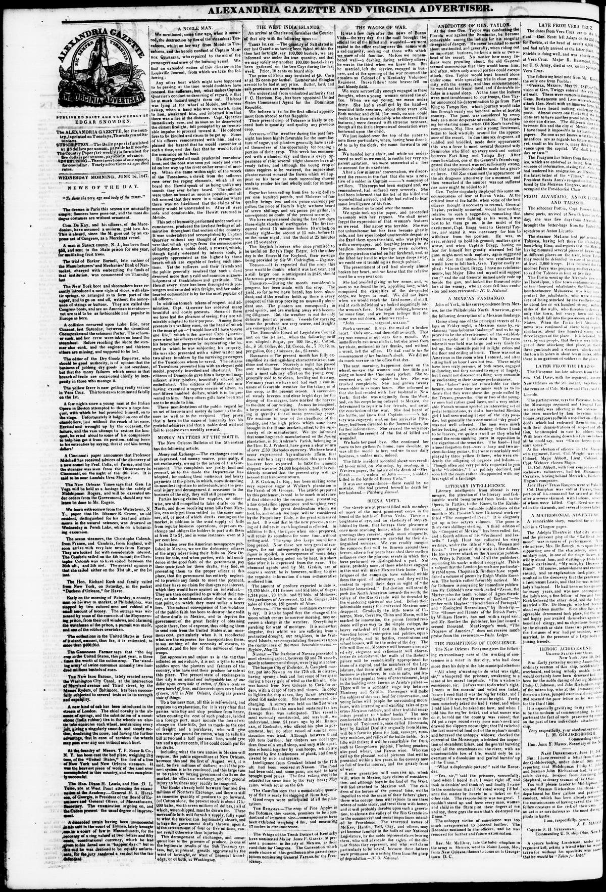
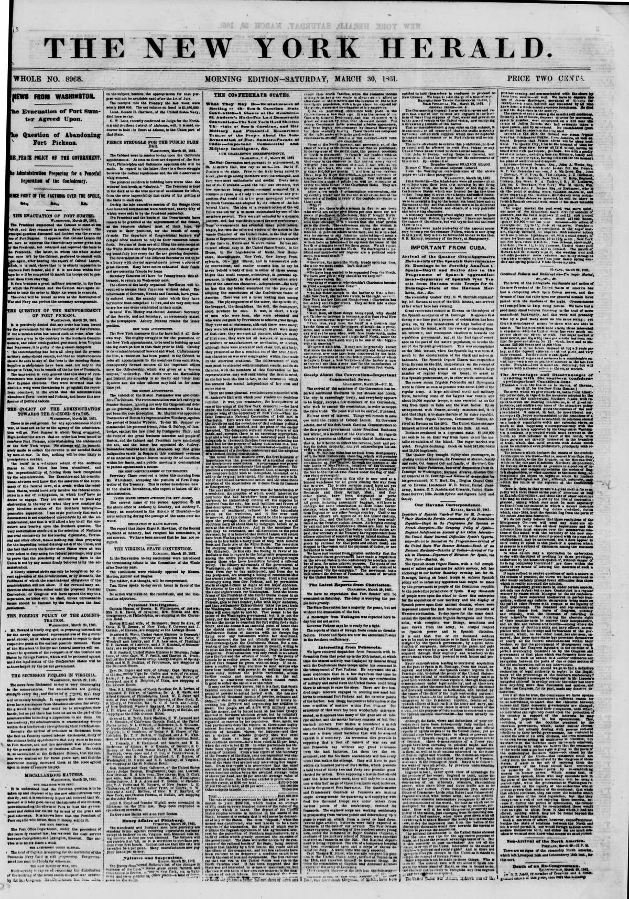
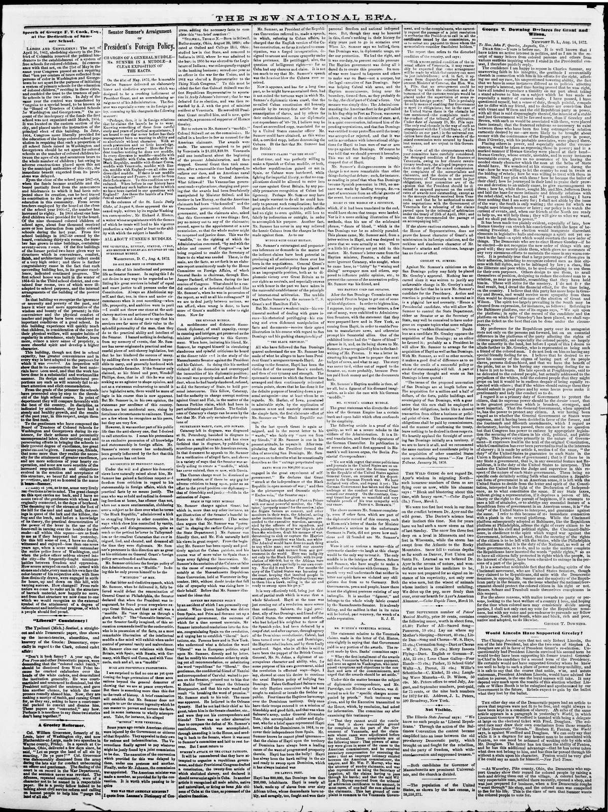
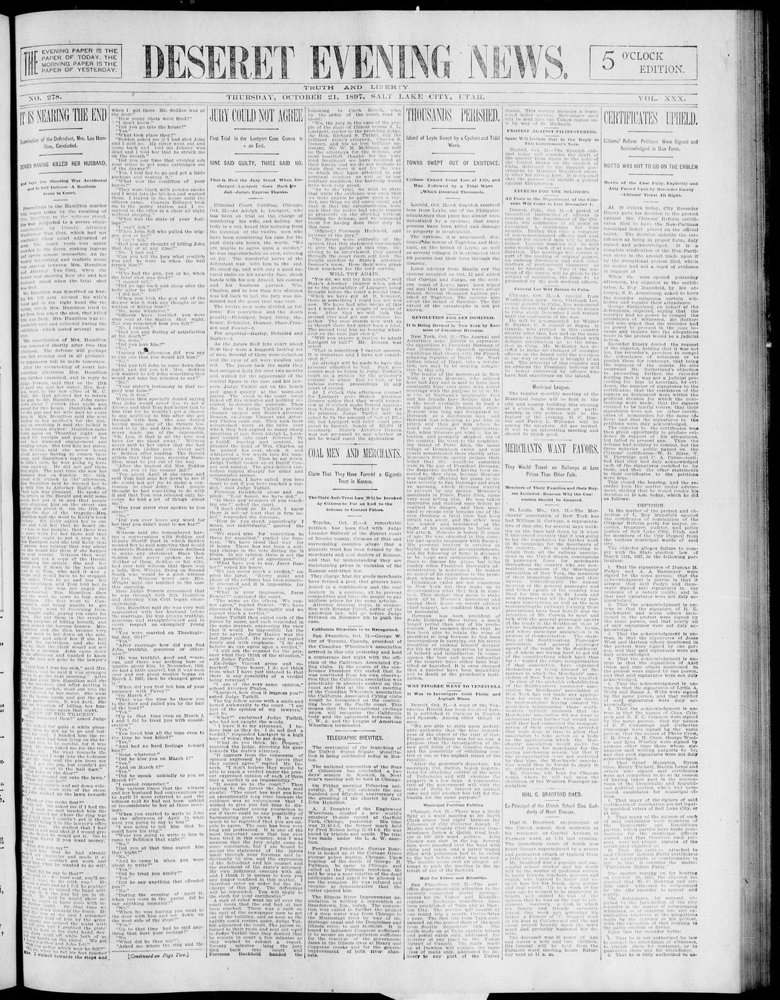
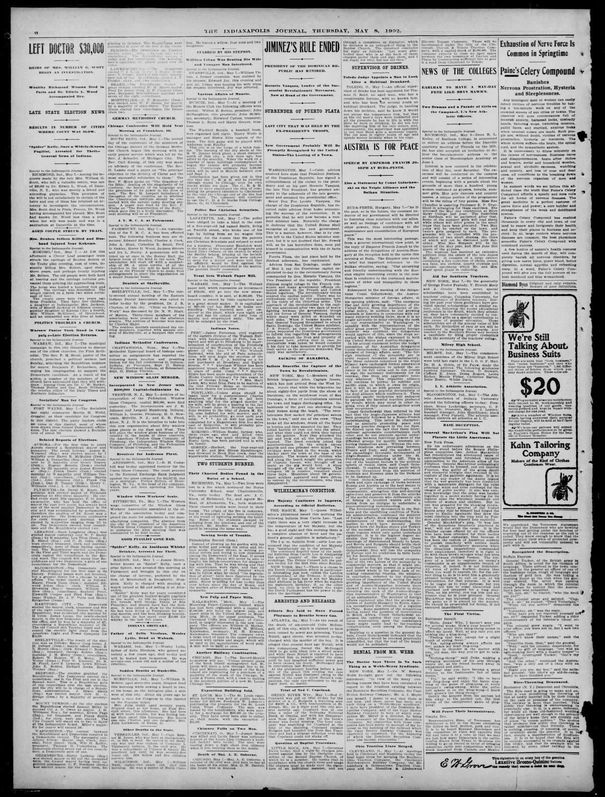

The storyLa historia
For over a century, American newspapers kept a close eye on the Dominican Republic: its ports and presidents, its sugar and its storms, its revolutions and its baseball. This site gathers that coverage in one place, in the order it appeared, in English and Spanish. Some articles are here in full; the rest carry a summary and the passage it came from, with the original page always one click away. The collection is still growing, and readers who know something we don't are invited to send an observation from any article page.Durante más de un siglo, los periódicos estadounidenses siguieron de cerca a la República Dominicana: sus puertos y presidentes, su azúcar y sus tormentas, sus revoluciones y su béisbol. Este sitio reúne esa cobertura en un solo lugar, en el orden en que apareció, en inglés y en español. Algunos artículos están aquí completos; los demás llevan un resumen y el pasaje del que salió, con la página original siempre a un clic. La colección sigue creciendo, y quien sepa algo que nosotros no sabemos puede enviar una observación desde cualquier página de artículo.
Search the collectionBuscar en la colección
Browse by topicExplorar por tema
A Revolution Next DoorUna revolución al lado
American editors discovered Hispaniola through Haiti's revolution: fascination, fear, and trade. The island's east lived the same years as collapsing empires and an approaching army.Los editores estadounidenses descubrieron La Española a través de la revolución de Haití: fascinación, miedo y comercio. El este de la isla vivió esos mismos años como imperios que caían y un ejército que se acercaba.
Featured articleArtículo destacado
In the former part of October, the Delaware Indians passed through
Letters from Port au Prince of the 1st inst. state that all the people of the North had submitted to the Republic, and but one government existed. President Boyer had arrived at the Cape.…
Invasion, Occupation, and IndependenceInvasión, ocupación e independencia
American papers reported 1822 in the calm words of administration. Dominicans lived the next twenty-two years as a foreign occupation, and ended it with independence in 1844.Los periódicos estadounidenses contaron 1822 con las palabras tranquilas de la administración. Los dominicanos vivieron los veintidós años siguientes como una ocupación extranjera, y la terminaron con la independencia en 1844.
Featured articleArtículo destacado
ON FOREIGN MISSIONS
Your committee on F. Missions present the following Report:— The past year has been an eventful period in the history of F. Missionary operations. While we have occasion to mourn the loss of some valuable Missionaries; the unparalleled succ…
Two readingsDos lecturas
Read the American items below as their editors framed them: reports of order, revenue, and diplomacy. Then read them as they were received in the east: decrees of an occupying power. The distance between those two readings is where this chapter of Dominican history lives.Lea los textos estadounidenses que siguen tal como sus editores los presentaron: informes de orden, ingresos y diplomacia. Luego léalos como se recibieron en el este: decretos de una potencia ocupante. En la distancia entre esas dos lecturas vive este capítulo de la historia dominicana.
Evidence from the newspapersLa evidencia en los periódicos (7)
higher repute than formerly Eund since thie nrriat ofihe Argus brig at St. Georges,(whith- St. Domingo early in…
PassagePasaje
higher repute than formerly Eund since thie nrriat ofihe Argus brig at St. Georges,(whith- St. Domingo early in Februany.I brars to be" Done at the National Palace of St Do and the question bring put on the resolutjon, The Senate resumed,in…
he nble to commtinicte Something un he on Expenditures or the Pulolie Buildings, Mr.NELsox ofMusg.fromthe Committee…
PassagePasaje
he nble to commtinicte Something un he on Expenditures or the Pulolie Buildings, Mr.NELsox ofMusg.fromthe Committee Hoore, of Ambamn,when the queston was pu,aod tiesmendment oegatived. rightfully he appli-d to the object proposed; mitte to …
which letely cut on te two Spsaish schioon- Sd Murc ntiPu eeeringse rmfoe Esrcanie Omreswhh slate, 10,000 00 sons…
PassagePasaje
which letely cut on te two Spsaish schioon- Sd Murc ntiPu eeeringse rmfoe Esrcanie Omreswhh slate, 10,000 00 sons toauthorilu the people of Finrida to e. Mr.Waien then moved taamehd the bin have exercised, of declaring his sentinrnts; and h…
Dry Goods, In some remarks,under this head Meeting"and literally speaking, it tlransportation ot 630o colored peuple…
PassagePasaje
Dry Goods, In some remarks,under this head Meeting"and literally speaking, it tlransportation ot 630o colored peuple smali bridges on the higliways on t. ther side of the river, are nealy aii Also a general assortment of sereral weeks go, w…
A WEST INDIA PARSON.
[From Colgridge's Six Months in the West Indies.] The church in Roseau is well situated and tolerably finished without, but the interior is in a miserable state. The common pitch pine, white unpainted, has a particularly unpleasant effect i…
A WEST INDIA PARSON
From Coleridge's Six Months in the West Indies. The church in Roseau is well situated, and tolerably finished without, but the interior is in a miserable state. The common pitch pine, when unpainted, has a particularly unpleasant effect in …
TOBACCO, &c.
400 boxes "J. Hare's" Sweet Cavendish TOBACCO 185 do "Keen & Hare's" do do do 134 do "P. Labby" pound lump do 50 do Small Lump 11 & 16 lbs. to the various brands 335 qr. boxes Havana SEGARS "Muda" brand 167 qr. and eighth boxes do do "Jaque…
A Republic Looking for RecognitionUna república en busca de reconocimiento
American coverage mixed sympathy for the new republic with measurements of Samaná Bay as a future naval station. Dominicans were defending borders and asking to be treated as a country.La cobertura estadounidense mezcló simpatía por la nueva república con mediciones de la bahía de Samaná como futura estación naval. Los dominicanos defendían fronteras y pedían ser tratados como un país.
Featured articleArtículo destacado
FROM OUR PARIS CORRESPONDENT.
All the news from France seems to-day to confirm the story of the imperial programme announced in the Moniteur on the 1st of January. Indeed, the French have the few words uttered by the Emperor himself at the Tuileries on the 1st January, …

Harrison, E^q., bas been appointed United States Commercial Agent for the
Evidence from the newspapersLa evidencia en los periódicos (12)
Cape Haytien-Haiti.
Since I last had the pleasure, in the month of January, Haiti was reposing in the sweet sleep of confidence and tranquility, and we all looked forward to a season of renewed life and prosperity in her affairs. This was but a deceitful calm …
Cape Haytien—Haiti.
Affairs in the Haytien Empire—Negro Respect for a Flag of Truce—To al Overthrow of the Black Troops under Pierot, &c. When I last had this pleasure, in the month of January, Haiti was reposing in the sweet sleep of profound and honorable pe…
FROM PORT AU PLATT—By the Hero, Boyd, arrived last night in eight days from Port au Platt, we learn that everything was tranquil in that place when she left. Business was entirely at a stand still. The other portions of the island were in a fine condition, but from want of attendance would fall short, on account of the planters being engaged in the revolution. The following is the capitulation between the French and Spaniards of Hayti:—
This day March 14th, 1844, the members of the Commission appointed by J. Beuchot, the moment the Haytien flag was lowered, to treat with the Junta of the Dominican republic, and the officers appointed by General Cadet Pierre, the following …
RECENT RIOTS IN HAYTI.
The following letter, which the Journal of Commerce ascribes to an intelligent source at Port au Plata, Hayti, gives the most connected view of the recent events in that distracted island than we have elsewhere seen: "PORTO PLATA, MAY, 1844…
LATE FROM HAYTI
—By the brig Phil. Enquirer, Capt. King, arrived yesterday from Cape Haytien, intelligence has been received at the Merchants' Exchange as late as the 28th ult. Tranquility was restored at Cape Haytien. Guerrier had been proclaimed Presiden…
LATE FROM HAYTI.
The following intelligence, from the Philadelphia United States Gazette, confirms the reports which have previously reached us of another change of Government in Hayti. The intelligence is brought by the schooner Mary Ann, which left Cape H…
Hayti
The Government of the 3d of May, at the head of which is General Philippe Guerrier, an old soldier of the first army, which, under Dessalines, achieved the independence of the country, has adopted moderate counsels, and evinces a most anxio…
FROM ST. DOMINGO.
A Dominican man-of-war schooner, belonging to General Santa Ana, called the Separacion, formerly the pilot boat Romp, arrived off here to-day, with letters from General Santa Ana to Gen. Villanueve, informing him that he, Santa Ana, had bee…
FROM HAYTI.
The United States ship Vandalia, Commander JOHN S. CHAUNCEY, arrived at Pensacola, on the 12th ultimo, last from Port au Prince, via Aux Cayes, which latter port she left on the 12th ultimo. Though the island of St. Domingo is in a very uns…
FROM OUR EUROPEAN CORRESPONDENT.
M. THIERS has brought up his Report from the Commission on the Deputies on the Education Bill as fashioned by the Peers. It is a grand tractate, which occupied nearly three hours in the reading, and requires seven or eight columns of the jo…
FROM ST. DOMINGO.
An arrival from Hayti at Philadelphia brings intelligence to the 9th instant. In political affairs all was quiet. The Constituent Assembly had been dissolved. The project of dividing the Island into States was abandoned, and the Government …
IMPORTANT FROM ST. DOMINGO.
—The Island continues in a very unsettled state, in consequence of an expected attack by the Haytiens. Gen. Boewavo had been recalled to the capital, and was succeeded by Gen. St. Jago. The Spaniards are being appointed to office in place o…
Annexation to Spain and the Restoration WarLa anexión a España y la Guerra de la Restauración
American readers followed Spain's return through the lens of their own Civil War. Dominicans answered the annexation with a war that restored the republic.Los lectores estadounidenses siguieron el regreso de España con el lente de su propia Guerra Civil. Los dominicanos respondieron a la anexión con una guerra que restauró la república.
Featured articleArtículo destacado
LETTER FROM HAYTI.
Extract of a letter from a gentleman recently returned from the Island of St. Domingo and Port-au-Prince to the Editor of the Dispatch, dated at Sea, on board the steamship Golden Gate, off Cape Haytien, Dec. 1, 1864. DEAR SIR: After a long…

OUR HAVANA CORRESPONDENCE. Departure of Spanish Vessels-of-War for St. Domingo—Their Mission the Formal Annexation of the Dominican Republic—Haiti in the Programme for Spanish or French Absorption—The Grasping Policy of Spain—England Indifferent on Account of her Cotton Interests—The United States' Internal Difficulties Spain's Opportunity—Mexico to Succeed on the Programme—Arrival of the United States War Steamer Mohawk—State of the Eminent Merchant—Suicides of Coolies—Arrival of the Steamer Panama—Departure of Miramon for Spain, via New York—Markets, &c.
Evidence from the newspapersLa evidencia en los periódicos (12)
On the 16th inst., when the Spanish flag was hoisted, much
The New-York daily tribune reported that following the hoisting of the Spanish flag on the 16th—which caused consternation among local inhabitants—the fully armed Spanish frigate Blanca was dispatched from Havana on the 22nd with regular troops to assist the Spanish protectorate or annexation. Additional naval and military forces, along with approximately 5,000 regular troops on the Petronila and Derenguela and about 10,000 more from Spain, were reported to be following. Meanwhile, business on the island remained depressed, and passengers traveling on the Quaker City included ex-President Miramon of Mexico and Major Patterson, a bearer of dispatches from St. Domingo to Spain.
El New-York daily tribune informó que, tras el izamiento de la bandera española el día 16 —lo que causó consternación entre los habitantes locales—, la fragata española totalmente artillada Blanca fue despachada desde La Habana el día 22 con tropas regulares para apoyar el protectorado o anexión española. Se reportó que fuerzas navales y militares adicionales, junto con aproximadamente 5.000 soldados regulares a bordo de la Petronila y la Derenguela y unos 10.000 más procedentes de España, les seguirían en breve. Entretanto, el comercio en la isla continuaba deprimido, y entre los pasajeros que viajaban en el Quaker City figuraban el expresidente Miramón de México y el mayor Patterson, portador de pliegos oficiales desde Santo Domingo hacia España.
OUR HAVANA CORRESPONDENCE. Departure of Spanish Vessels-of-War for St. Domingo—Their Mission the Formal Annexation of the Dominican Republic—Haiti in the Programme for Spanish or French Absorption—The Grasping Policy of Spain—England Indifferent on Account of her Cotton Interests—The United States' Internal Difficulties Spain's Opportunity—Mexico to Succeed on the Programme—Arrival of the United States War Steamer Mohawk—State of the Eminent Merchant—Suicides of Coolies—Arrival of the Steamer Panama—Departure of Miramon for Spain, via New York—Markets, &c.
The Spanish steam frigate Blanca, with a full complement of troops, and the steam sloop Isabel, left our anchorage in our harbor Saturday evening last for St. Domingo, having in view a mission of an aggressive policy and to defeat any oppos…
The Island continued divided, for some years, into three separate and
If any one will take the trouble to draw, on any good map of the United States, a line due South from the extreme point of the Peninsula of Florida, it will be found—after crossing the inlet, sixty miles wide, from the Atlantic Ocean to the…
There has been a small emigration from South America, but this
According to The National Republican on April 5, 1861, Spain sent a representative to the Dominican Republic, while Santana's policies fueled opposition by provoking claims that he was selling the country to whites. Santana sought foreign aid to secure his government's perpetuity and repay a loan, which he used to counter the ongoing intrigues of the opposition and the exiled Baez. Additionally, the newspaper noted Mr. Redpath's view that suggestions of a French reconquest of Hayti are absurd and could harm efforts to colonize Hayti with colored Americans, noting that France has recognized Hayti's independence and draws revenue from it.
Según The National Republican del 5 de abril de 1861, España envió un representante a la República Dominicana, mientras que las políticas de Santana alimentaban a la oposición al suscitar acusaciones de que estaba vendiendo el país a los blancos. Santana buscó ayuda extranjera para asegurar la permanencia de su gobierno y pagar un préstamo, el cual empleó para contrarrestar las continuas intrigas de la oposición y del desterrado Báez. Además, el periódico consignó la opinión del Sr. Redpath de que las insinuaciones de una reconquista francesa de Haití eran absurdas y podían perjudicar las gestiones para colonizar Haití con afroestadounidenses, destacando que Francia había reconocido la independencia haitiana y obtenía rentas de ella.
HAYTI AND ST. DOMINGO.
James Redpath, whose knowledge of the condition of affairs in the island of Hayti is as comprehensive as that of any other man in America, and who, in his various social and political organizations, addresses a letter to the New York Tribun…
Jamee Redpatii, who i. officially oon- nected with the Republic of
A Washington dispatch to the New York Tribune, Thursday, says: The Dominican Republic, which has an area of 18,000 square miles, and a population of 136,000, had declared its complete independence of the French portion. Spain, however, has …
S nce the ll.ght of Soulcuquelbc ll.iytiem have been leoigauiziug their
The Richmond Daily Whig reported concerns over Spanish ambitions to reoccupy Santo Domingo and potentially reintroduce plantation slavery as practiced in Cuba. Citing James Redpath, the paper stated that President Santana had mortgaged Dominican custom houses to secure a Spanish loan, resulting in the arrival of Spanish officials to collect revenues.
El Richmond Daily Whig dio cuenta de las inquietudes en torno a las ambiciones españolas de reocupar Santo Domingo y de restablecer eventualmente la esclavitud de plantación tal como se practicaba en Cuba. Citando a James Redpath, el periódico expuso que el presidente Santana había hipotecado las aduanas dominicanas en garantía de un préstamo español, lo que derivó en la llegada de funcionarios españoles para recaudar los aranceles.
Sent to reenslave the blacks, and were ignominiously defeated in the
Following the 1844 secession of the Dominican Republic, two alternating political parties led by Santana and Baez emerged, representing reunion and independence policies respectively. Santana repeatedly and unsuccessfully sought to place the republic under the control of Spain, France, or Venezuela, and also failed in his efforts to induce white emigration from the United States.
Tras la separación de la República Dominicana en 1844 surgieron dos partidos políticos rivales encabezados por Santana y Báez, partidarios respectivamente de la anexión y de la independencia. De forma reiterada e infructuosa, Santana procuró colocar la república bajo el control de España, Francia o Venezuela, fracasando igualmente en sus tentativas de atraer inmigración de colonos blancos procedentes de los Estados Unidos.
HIGHLY INTERESTING FROM ST. DOMINGO. Our St. Domingo Correspondence. The Dominican Republic committed suicide yesterday. - His Treasonable Act - The Sophisms and the End - Attachment of the People - The United States Appealed to, &c., &c.
The Dominican republic committed suicide yesterday. I was one of the witnesses of the act, and can testify that it was a very discreditable affair. Never was there seen a more grotesque corpse or a more ridiculous funeral. Santana, the Pres…
NEW YORK, June 3.—The steamer Prince Albert arrived at Sk J-din's
In a brief telegram from New York on June 3, based on the steamer Prince Albert with Liverpool dates to May 21, the paper reports that the Queen of Spain has signed the decree for the annexation of San Domingo.
En un breve telegrama desde Nueva York el 3 de junio, basado en el vapor Prince Albert, con noticias de Liverpool hasta el 21 de mayo, el diario informa que la reina de España ha firmado el decreto de anexión de Santo Domingo.
OUR HAVANA CORRESPONDENCE.
Important Movements of British Naval Vessels, &c. The business of transferring vessels from the American to the British flag is proceeding with alacrity and despatch. Quite a number have availed themselves of the time allowed by the ample p…
The latest true intelligence from Hayti is that the Dominican Generals
A report from Cadiz dated the 6th states that exiled Dominican generals—including Cabral, Sanchez, Valentine, and Baez—joined disaffected populations to lead a serious insurrection against the Spanish occupation, raising the Dominican flag in La motta, Ney be, Cerca, and San Juan. The insurgents declared that if they could not remain independent, they would prefer incorporation with the Haytien Republic, while the Haytien Government maintained an attitude of observation with only a few prudent frontier troops stationed near the border.
Un informe desde Cádiz fechado el día 6 señala que generales dominicanos desterrados —entre ellos Cabral, Sánchez, Valentine y Báez— se unieron a sectores descontentos de la población para encabezar una seria insurrección contra la dominación española, enarbolando la bandera dominicana en La motta, Ney be, Cerca y San Juan. Los insurrectos manifestaron que, de no poder preservar la independencia, preferirían la unión con la República de Haití, en tanto que el gobierno haitiano guardaba una postura de observación destacando únicamente escasas y prudentes tropas de frontera en las inmediaciones del límite limítrofe.
The American Annexation FightLa lucha por la anexión estadounidense
In Washington, annexation was debated as an American question of destiny, race, and naval strategy. In Santo Domingo, it was debated as the sale of the nation — and refused.En Washington, la anexión se debatió como una cuestión estadounidense de destino, raza y estrategia naval. En Santo Domingo, se debatió como la venta de la nación — y fue rechazada.
Featured articleArtículo destacado
Iiayti has been the bully Hayt tas alway been the hawk
Sajet, I say, showed at once his desire to continue the usual Haytien policy of bullying San Domingo. Fabre Geffrard and Salnave were the only Haytien executives who had not sought to embroil or invade the feebler republic. Four times the H…
Two readingsDos lecturas
Notice how rarely the American debate below asks Dominicans what they want. The annexation fight was conducted in Washington newspapers and Senate speeches; the Dominican answer — the Restoration generation's flat refusal to be sold — has to be read between the lines, and against them.Note cuán rara vez el debate estadounidense que sigue pregunta a los dominicanos qué quieren. La lucha por la anexión se libró en periódicos de Washington y discursos del Senado; la respuesta dominicana — la negativa rotunda de la generación de la Restauración a ser vendida — hay que leerla entre líneas, y contra ellas.

Iiayti has been the bully Hayt tas alway been the hawk
Evidence from the newspapersLa evidencia en los periódicos (12)
ENGLAND’S RECOGNITION OF THE DOMINICANS.
[From the Madrid Epoca, Dec. 18.] In consequence of the effect produced upon the public mind by this announcement, Sir John Crampton, the English Ambassador at this Court, felt bound to request explanations from his government upon a matter…
Vera Cruz advices represent the emperor s troops as makiugcousidcrablc pro
Part of the Belgian legion have reached Mexico, and more are expected. Vera Cruz advices represent the emperor's troops as making considerable progress against the liberals in various directions, but the news is not much to be relied on.--N…
MISCELLANEOUS NEWS.
From St. Domingo we learn that the National Convention, sitting at Santiago de los Caballeros, adjourned sine die on the 25th of March, after electing a legal government, to hold office until ninety days after the country has been evacuated…
Thus the great war against the rebellion, which all lie nations
According to The New York Herald on April 30, 1865, European monarchies were described as quaking with fear over the growing strength of the United States and its potential impact on Spanish possessions like Cuba and Porto Rico. The article specifically cited a fearful argument presented by the "Conqueror of Africa," which claimed the United States planned to send thousands of freed colored people to St. Domingo to form a negro nationality and army to ultimately attack and destroy Cuba. The newspaper dismissed this theory as a "raving of an imagination entirely possessed by fear," asserting that no dilatory measures would be needed if the United States truly intended to conquer European possessions.
Según The New York Herald del 30 de abril de 1865, las monarquías europeas temblaban de recelo ante el creciente poderío de los Estados Unidos y sus posibles repercusiones en las posesiones españolas de Cuba y Puerto Rico. El artículo citó en particular un medroso alegato esgrimido por el «Conquistador de África», quien aseguraba que los Estados Unidos proyectaban enviar a miles de libertos de color a Santo Domingo a fin de constituir una nacionalidad y un ejército negros con el propósito final de asaltar y arrasar a Cuba. El diario desestimó dicha teoría como el «desvarío de una imaginación presa del pánico», asegurando que los Estados Unidos no necesitarían recurrir a maniobras indirectas si de veras abrigaran el propósito de conquistar posesiones europeas.
Domingo correspondent makes a statement of numerous outrages committed on the
Our St. Domingo correspondent makes a statement of numerous outrages committed on the property and rights of citizens of the United States domiciled in the Dominican republic by the Spanish military forces during their invasion of that coun…
ST. DOMINGO.
Permit one who has been no inactive spectator of the events described to offer to the American people in what way your Monroe doctrine has been attacked and defended at St. Domingo. It is a matter of history that Spain, taking advantage of …
The lives of the Awerican und English Consuls had been frequently
According to the New-York Daily Tribune of August 22, 1865, the Boletin Oficial of Santiago reported on July 7 that departing Spanish troops were taking Dominican cannon and property, while a few Spanish troops still lingered in St. Domingo because Gen. Gándara and the Dominicans had not agreed on a final evacuation treaty. The Dominican government rejected a drafted treaty because Gándara's preferred language made the agreement appear to be a Spanish concession rather than a surrender, and Gándara subsequently refused to receive new commissioners unless they confirmed the objectionable treaty. Consequently, the Dominican government officially expressed its determination not to yield, signifying that the war had not ceased.
Según el New-York Daily Tribune del 22 de agosto de 1865, el Boletín Oficial de Santiago denunció el 7 de julio que las tropas españolas en retirada se llevaban cañones y propiedades dominicanas, quedando aún remanentes peninsulares en Santo Domingo debido a desacuerdos entre el general Gándara y los dominicanos sobre el tratado definitivo de evacuación. El gobierno dominicano rechazó el borrador del convenio porque los términos exigidos por Gándara hacían figurar el acuerdo como una concesión graciosa de España y no como una capitulación en regla, negándose luego Gándara a recibir nuevos comisionados si no convalidaban dicho documento objetado. Por consiguiente, el gobierno dominicano ratificó oficialmente su firme decisión de no transigir, lo que evidenciaba que las hostilidades no habían concluido.
ST. DOMINGO AFFAIRS.
NEW YORK, August 22.—The August 2d St. Thomas advice gives further particulars of the matter heretofore mentioned, regarding the new issue raised by General Gandara, the commander of the Spanish troops, with the Dominican Government, appare…
This latter Mtement Is hardly borne oot l>y the reports which
The New York Herald reported that Spanish commander General Gandam blockaded the principal ports of the Dominican Republic after the Dominican government refused his peace treaty demands, preventing the exportation of American and European tobacco. In response, the Dominicans resolved to commission privateers against Spanish commerce, sending an authorized agent to the United States and Europe to issue letters of marque. Additionally, the newspaper reported that a severe summer drought, heavy taxes, and poverty left thousands of negro laborers in Jamaica on the verge of starvation, creating fears of a local outbreak against the Governor and his officers.
The New York Herald reportó que el jefe militar español, general Gándara [Gandam en el texto], bloqueó los puertos principales de la República Dominicana tras rehusar el gobierno dominicano sus exigencias para un tratado de paz, obstaculizando la exportación de tabaco consignado a Europa y los Estados Unidos. Como réplica, los dominicanos resolvieron armar corsarios contra el tráfico mercante español, enviando un agente facultado a los Estados Unidos y a Europa para conceder patentes de corso. Por otra parte, el periódico comunicó que una persistente sequía estival, tributos gravosos y la miseria general tenían a miles de trabajadores negros en Jamaica al borde de la inanición, desatando temores de un levantamiento popular contra el gobernador colonial y sus subordinados.
Gandara, the Spanish commander, having withdrawn his troops from the Interior
The Daily Ohio Statesman reported on September 2, 1865, that Spanish commander General Gandara withdrew troops from the interior and blockaded the principal ports of the Dominican Republic after the Dominican government refused unreasonable peace treaty demands, prompting Dominicans to commission privateers against Spanish commerce. Additionally, a Kingston, Jamaica correspondent reported that revolutionists were making alarming headway, causing President Geffrard to charter a mail steamer to prepare for his escape, while severe drought and heavy taxes left Jamaican negro laborers in abject poverty and near starvation.
El Daily Ohio Statesman informó el 2 de septiembre de 1865 que el comandante español general Gándara replegó sus fuerzas del interior y bloqueó los puertos principales de la República Dominicana luego de que el gobierno dominicano rechazara desmedidas exigencias para un tratado de paz, lo que indujo a los dominicanos a armar buques corsarios contra el comercio marítimo español. Asimismo, un corresponsal en Kingston, Jamaica, informó que los revolucionarios avanzaban de forma alarmante, lo que llevó al presidente Geffrard a fletar un vapor correo para preparar su fuga, mientras que una rigurosa sequía y excesivos impuestos sumían a los peones negros de Jamaica en la indigencia y la hambruna.
The Revolution in Hayti—President Geffrard preparing to escape—Suffering among the Negroes on the Island of Jamaica—An Outbreak Feared—San Domingo Affairs.
The Herald's Kingston, Jamaica, correspondent says the progress the Haytian revolutionists are making in Hayti, has been deemed by President Geffrard as sufficiently alarming to induce him to make preparations for flight from the island. A …
News from St.
News from St. Domingo to September 9 describes Dominicans celebrating the second anniversary of their liberation from Spain, after eighteen months of fighting forced Spain to evacuate the island. General Pimentel, elected provisional president in March, became unpopular for harsh and unlawful acts, and after citizens in the capital repudiated him he resigned, while General J. M. Cabral was commissioned as Protector of the republic to summon a National Convention.
Noticias de Santo Domingo hasta el 9 de septiembre describen a los dominicanos celebrando el segundo aniversario de su liberación de España, después de que dieciocho meses de lucha obligaron a España a evacuar la isla. El general Pimentel, elegido presidente provisional en marzo, se volvió impopular por actos duros e ilegales, y después de que los ciudadanos de la capital lo repudiaron, renunció, mientras el general J. M. Cabral fue nombrado Protector de la república para convocar una Convención Nacional.
Sugar, Debt, and StrongmenAzúcar, deuda y caudillos
American coverage moved to the business pages: sugar, steamships, and bonds. On the ground, the sugar boom and Heureaux's dictatorship were remaking Dominican society.La cobertura estadounidense pasó a las páginas de negocios: azúcar, vapores y bonos. En el terreno, el auge azucarero y la dictadura de Heureaux estaban rehaciendo la sociedad dominicana.
Featured articleArtículo destacado
REVOLUTION FOR SAN DOMINGO.
It Is Being Brewed in New York by Enemies of President Hereaux. New York, Oct. 21.—The Journal and Advertiser says: Efforts to crystalize the opposition to President Hereaux of San Domingo, the Spanish speaking republican that shares with t…

REVOLUTION FOR SAN DOMINGO.
Evidence from the newspapersLa evidencia en los periódicos (12)
From San Domingo, via Havana, it is re ported that (ieiu'.al
Based on the provided newspaper excerpt, General Ignaces Gonzales has been elected President of the Dominican Republic. Additionally, the new administration will probably endeavor to annul the Samaná Bay lease.
Según el extracto periodístico facilitado, el general Ignacio González ha sido elegido presidente de la República Dominicana. Además, la nueva administración probablemente procurará anular el arrendamiento de la bahía de Samaná.
This editorial tells how Baez was finally overthrown when a commander took command of his own troops, forced the…
This editorial tells how Baez was finally overthrown when a commander took command of his own troops, forced the rebels to join his standard and marched against him. Baez persuaded a boy with a canoe to paddle him out to a French war vessel in the harbour, on which he took refuge, leaving the Dominican Republic to its fate; the paper expects the republic to have a new constitution, and undoubtedly several new presidents, before the close of the year.
Este editorial cuenta cómo Báez fue finalmente derrocado cuando un comandante tomó el mando de sus propias tropas, obligó a los rebeldes a unirse a su bandera y marchó contra él. Báez persuadió a un muchacho con una canoa para que lo llevara remando hasta un buque de guerra francés en el puerto, en el que se refugió, dejando la República Dominicana a su suerte; el periódico espera que la república tenga una nueva constitución, y sin duda varios presidentes nuevos, antes de que termine el año.
After the insurgent commander obtained a four-day armistice and President Baez had made his arrangements for leaving…
After the insurgent commander obtained a four-day armistice and President Baez had made his arrangements for leaving the country, Baez sent the Senate a message on January 2, 1874 laying down the presidency, recalling that he had been called in 1868 when paper money had brought bankruptcy and public credit had vanished. That same afternoon Baez left Santo Domingo for St. Thomas on the French war vessel Kersaint, declaring he was in no sense an exile, having left voluntarily, and that he was tired of office and wished to rest and consult physicians about his eyes.
Después de que el comandante insurgente obtuviera una tregua de cuatro días y el presidente Báez hubiera hecho sus arreglos para salir del país, Báez envió al Senado un mensaje el 2 de enero de 1874 en el que renunciaba a la presidencia, recordando que había sido llamado en 1868 cuando el papel moneda había traído la bancarrota y el crédito público había desaparecido. Esa misma tarde Báez salió de Santo Domingo hacia Saint Thomas en el buque de guerra francés Kersaint, declarando que no era en ningún sentido un exiliado, pues había salido voluntariamente, y que estaba cansado del cargo y deseaba descansar y consultar a médicos sobre sus ojos.
Hiat was set on loot some years ago with the obiect
The New York Herald reported on a past scheme led primarily by England and Spain to establish a new power called the Confederation of the Antilles, which would unite St. Domingo, Cuba, Jamaica, and other West India islands to counter rapidly developing American interests. According to the article, General Báez expressed sympathy for the islanders' independence and noted that while St. Domingo harbored sympathies for Spain, Cubans living in St. Domingo opposed his government because he refused to violate neutrality laws by fitting out expeditions against Spain.
El New York Herald informó sobre un proyecto anterior encabezado principalmente por Inglaterra y España para establecer una nueva potencia denominada la Confederación de las Antillas, la cual uniría a Santo Domingo, Cuba, Jamaica y otras islas de las Antillas para contrarrestar el rápido crecimiento de los intereses estadounidenses. Según el artículo, el general Báez expresó simpatía por la independencia de los isleños y señaló que, si bien Santo Domingo albergaba simpatías hacia España, los cubanos residentes en Santo Domingo se oponían a su gobierno porque se negaba a infringir las leyes de neutralidad pertrechando expediciones contra España.
The case of ex-President Baez of St.
The case of ex-President Baez of St. Domingo was again up in Brooklyn on a motion to vacate the order of arrest issued by Judge Pratt. An affidavit submitted by his counsel states that the complainant Hatch was an active participant in an insurrection, was captured and sentenced to death, but that the sentence was commuted to exile as a favor to the United States Government, and Baez maintains that the capture and sentence were merely the proper exercise of his powers and duties as president of the republic and denies the jurisdiction of the court.
El caso del expresidente Báez de Santo Domingo volvió a verse en Brooklyn en relación con una moción para anular la orden de arresto dictada por el juez Pratt. Una declaración jurada presentada por su abogado afirma que el demandante Hatch fue participante activo en una insurrección, fue capturado y condenado a muerte, pero que la sentencia fue conmutada por el exilio como un favor al gobierno de los Estados Unidos, y Báez sostiene que la captura y la sentencia fueron simplemente el ejercicio debido de sus facultades y deberes como presidente de la república y niega la jurisdicción del tribunal.
The return of ex-Prosident Baez to power, Upon the intercession of
The New-York Tribune reported on April 7, 1874, that the return of ex-President Baez to power led to the release of Carlos and Felix Baez upon the intercession of the French Consul, while business remained stagnant and government obligations were offered at an 85 percent discount. Additionally, the announcement that the treaty between the Santo Domingo Government and the Samana Bay Company had been abrogated discouraged promoters and sympathizers, prompting returning Commissioners Capt. Samuels and Gov. Fabens to hold informal consultations with company director Paul N. Spofford and other members in New York.
El New-York Tribune informó el 7 de abril de 1874 que el regreso al poder del expresidente Báez condujo a la liberación de Carlos y Félix Báez tras la intercesión del cónsul francés, mientras que el comercio permanecía paralizado y las obligaciones gubernamentales se ofrecían con un 85 por ciento de descuento. Además, el anuncio de la abrogación del tratado entre el gobierno de Santo Domingo y la Samana Bay Company desalentó a promotores y simpatizantes, lo que motivó a los comisionados retornados, el capitán Samuels y el gobernador Fabens, a sostener consultas informales en Nueva York con el director de la compañía Paul N. Spofford y otros miembros.
Due to British influence, backed by the promised sup- port of
The New-York Tribune reported on British influence, backed by a promised war vessel and a multi-million-dollar interest-free loan to the Dominican Government, though a director stated that holders of the English Hartmont loan were not responsible for abrogating the treaty. Additionally, a director noted that previous concessions granted to Funkhauser and the Samana Surveying Company were not absorbed by the Samana Bay Company. The article also featured a translated decree from Provisional President Ignacio Maria Gonzales regarding the lease contract for the Peninsula and Bay of Samana.
El New-York Tribune informó sobre la influencia británica, respaldada por la promesa de un buque de guerra y un préstamo multimillonario libre de intereses para el gobierno dominicano, aunque un directivo declaró que los tenedores del préstamo inglés Hartmont no eran responsables de la derogación del tratado. Asimismo, un directivo señaló que las concesiones previas otorgadas a Funkhauser y a la Samana Surveying Company no fueron absorbidas por la Samana Bay Company. El artículo incluyó además la traducción de un decreto del presidente provisional Ignacio María González relativo al contrato de arrendamiento de la península y bahía de Samaná.
Uouaaies, wlio styles himseit "General oi the National Armies and j
Based on the provided newspaper excerpt, the president-elect, Ignacio M. Gonzales, had not yet been installed because a constitutional convention had not agreed on its articles. The Special Commission of the Samana Bay Company failed to reach an amicable settlement with the government over pending accounts, leading the provisional government to declare the Samana Bay Convention null and void. In response, the Commissioners protested the act, demanded arbitration, and planned to call upon the United States government for protection against violent proceedings by Dominican authorities.
A partir del extracto periodístico provisto, el presidente electo, Ignacio M. González, aún no había asumido el cargo debido a que una convención constituyente no había acordado su articulado. La comisión especial de la Samana Bay Company no logró alcanzar un arreglo amistoso con el gobierno sobre las cuentas pendientes, lo que llevó al gobierno provisional a declarar nula y sin valor la convención de la bahía de Samaná. En respuesta, los comisionados protestaron contra dicha medida, exigieron un arbitraje y manifestaron su intención de solicitar la protección del gobierno de los Estados Unidos frente a las actuaciones violentas de las autoridades dominicanas.
When we receive proper 1 recognition irom the Dominican government we
Based on the provided excerpt, a representative identified as Mr. Pabens stated that his company's financial embarrassment is temporary and that they would pay $150,000 in gold once receiving proper recognition from the Dominican government, noting that total company claims amount to about $80,000. He also reported having a long interview with Gonzalez, whom he considers the head of the revolutionary party rather than the legitimate ruler since Gonzalez has not taken the oath of office. Additionally, Mr. Howe wrote a letter to President Grant, the U.S. Consul reported on the occurrence to Secretary of State Hamilton Fish, and the publication of Gonzalez's decree negatively affected the company's plans to issue a commercial loan.
Según el extracto facilitado, un representante identificado como el Sr. Fabens declaró que las dificultades financieras de su empresa eran temporales y que pagarían 150.000 dólares en oro en cuanto recibieran el debido reconocimiento del gobierno dominicano, señalando que las reclamaciones totales de la empresa ascendían a unos 80.000 dólares. Asimismo, informó haber mantenido una prolongada entrevista con González, a quien consideraba cabecilla del partido revolucionario y no gobernante legítimo dado que González no había prestado juramento del cargo. Por otra parte, el Sr. Howe dirigió una carta al presidente Grant, el cónsul estadounidense informó del suceso al secretario de Estado Hamilton Fish, y la publicación del decreto de González perjudicó los planes de la compañía para emitir un empréstito comercial.
The steamship Tybee, from San Domingo on March 30, brings news that the British Consul-General of Port-au-Prince had…
The steamship Tybee, from San Domingo on March 30, brings news that the British Consul-General of Port-au-Prince had toured Samana Bay and visited Santo Domingo with Haitian treaty proposals, said to include cession of the disputed frontier territory and annulment of the Samana Bay Convention in return for a large interest-free loan from Haiti or England. The same advices report that President-elect Gonzalez had not been installed because the constitutional convention could not agree, and that the Provisional Government has declared the Samana Bay Convention null and void, while the company's commissioners protested and demanded arbitration and United States protection.
El vapor Tybee, procedente de Santo Domingo el 30 de marzo, trae la noticia de que el cónsul general británico en Puerto Príncipe había recorrido la bahía de Samaná y visitado Santo Domingo con propuestas haitianas de tratado, que según se dice incluían la cesión del territorio fronterizo en disputa y la anulación de la Convención de la Bahía de Samaná a cambio de un gran préstamo sin intereses de Haití o de Inglaterra. Las mismas noticias informan que el presidente electo González no había tomado posesión porque la convención constitucional no lograba ponerse de acuerdo, y que el Gobierno Provisional ha declarado nula la Convención de la Bahía de Samaná, mientras los comisionados de la compañía protestaron y exigieron arbitraje y la protección de los Estados Unidos.
TheBe conditions beiog admitted by the Dominican-Uovern ment, Hayti or England
Based on the provided newspaper excerpt, the Provisional Government of Santo Domingo declared the Samana Bay Convention null and void after special commissioners of the Samana Bay Company failed to reach an amicable settlement. In response, the commissioners protested the act as arbitrary and illegal, demanded arbitration, and announced plans to request protection from the United States Government. Meanwhile, the island was experiencing great excitement over potential loans from Hayti or England, and the installation of President-elect González was delayed because a convention framing a new constitution had not yet agreed on all its articles.
A partir del extracto periodístico facilitado, el Gobierno Provisional de Santo Domingo declaró nula y sin valor la convención de la bahía de Samaná tras el fracaso de los comisionados especiales de la Samana Bay Company en alcanzar un arreglo amistoso. En respuesta, los comisionados protestaron contra dicha medida por considerarla arbitraria e ilegal, exigieron arbitraje y anunciaron planes para solicitar la protección del Gobierno de los Estados Unidos. Entretanto, reinaba en la isla una gran agitación por posibles préstamos procedentes de Haití o Inglaterra, y la investidura del presidente electo González se hallaba demorada debido a que la convención encargada de redactar una nueva constitución aún no había acordado todos sus artículos.
News from Santo Domingo reports the failure of the Samana Bay Company as complete, with its principal losers named…
News from Santo Domingo reports the failure of the Samana Bay Company as complete, with its principal losers named and the loss put at perhaps a quarter of a million dollars. The Provisional Government has declared the Samana Bay Convention null and void, after a proposed treaty with Haiti, said to include cession of disputed frontier territory and annulment of the convention, and the company's commissioners have protested and demanded arbitration.
Noticias de Santo Domingo informan que el fracaso de la Compañía de la Bahía de Samaná es completo, nombran a sus principales perdedores y calculan la pérdida en quizá un cuarto de millón de dólares. El Gobierno Provisional ha declarado nula y sin efecto la Convención de la Bahía de Samaná, tras un tratado propuesto con Haití que, según se dice, incluía la cesión del territorio fronterizo en disputa y la anulación de la convención, y los comisionados de la compañía han protestado y exigido un arbitraje.
Collapse and the Customs QuestionColapso y la cuestión de las aduanas
After 1899, American papers narrated collapse and prescribed supervision. Dominicans saw the harvest of the debt — and decisions about their country moving abroad.Después de 1899, los periódicos estadounidenses narraron un colapso y recetaron supervisión. Los dominicanos vieron la cosecha de la deuda — y cómo las decisiones sobre su país se mudaban al extranjero.
Featured articleArtículo destacado
PRESIDENT OF THE DOMINICAN REPUBLIC HAS RETIRED.
Horacio Vasquez, Leader of the Successful Revolutionary Movement, Now at Head of the Government. SURRENDER OF PUERTO PLATA LAST CITY THAT WAS HELD BY THE EX-PRESIDENT'S TROOPS. New Government Probably Will Be Promptly Recognized by the Unit…

PRESIDENT OF THE DOMINICAN REPUBLIC HAS RETIRED.
Evidence from the newspapersLa evidencia en los periódicos (12)
There are two re publics on the island, the republic of
The Anaconda Standard published an overview of the Dominican Republic, detailing its geography, population of 610,000, and history from colonial rule through its independence on February 27, 1844. The report described the nation's political structure, public education system, and major agricultural exports, including tobacco, sugar, coffee, and mahogany. It also observed that while rich mineral deposits of gold, copper, and iron existed, the country's mineral resources remained largely undeveloped.
The Anaconda Standard publicó una reseña general de la República Dominicana, detallando su geografía, una población de 610.000 habitantes y su historia desde la época colonial hasta su independencia el 27 de febrero de 1844. El informe describía la estructura política del país, el sistema de educación pública y sus principales exportaciones agrícolas, entre ellas tabaco, azúcar, café y caoba. Observó asimismo que, si bien existían ricos yacimientos minerales de oro, cobre y hierro, los recursos mineros del país permanecían en gran medida inexplotados.
The Dominican congress has passed an act making import duties payable in United States gold, or in the current money…
The Dominican congress has passed an act making import duties payable in United States gold, or in the current money of the republic at the rate of $6 for $1 in gold. Formerly the rate was $2 for $1.
El congreso dominicano ha aprobado una ley que hace los derechos de importación pagaderos en oro de los Estados Unidos, o en la moneda corriente de la república a razón de $6 por $1 en oro. Anteriormente la tasa era de $2 por $1.
This article describes Santo Domingo as long disturbed by dissensions and revolutionary movements, naming Juan…
This article describes Santo Domingo as long disturbed by dissensions and revolutionary movements, naming Juan Jiminez, a former merchant of Monte Christi and permanent candidate for the presidency, as one of the chief troublemakers. It recounts how Jiminez in June 1898 organised a filibustering expedition against the Heureaux government and landed at Monte Christi, but failed, his men being killed or captured while he escaped, and how another invasion was hourly expected there in July; it also describes the country's recent acute financial crisis, when the rate of exchange on New York rose more than 100 per cent and a commercial panic followed.
Este artículo describe a Santo Domingo como perturbado durante mucho tiempo por disensiones y movimientos revolucionarios, y señala a Juan Jiménez, antiguo comerciante de Monte Cristi y candidato permanente a la presidencia, como uno de los principales agitadores. Cuenta cómo Jiménez organizó en junio de 1898 una expedición filibustera contra el gobierno de Heureaux y desembarcó en Monte Cristi, pero fracasó, pues sus hombres fueron muertos o capturados mientras él escapaba, y cómo en julio se esperaba allí otra invasión de un momento a otro; también describe la reciente crisis financiera aguda del país, cuando el tipo de cambio sobre Nueva York subió más del 100 por ciento y siguió un pánico comercial.
After the assassination of President Heureaux, Vice President Figueroa, who assumes the presidential functions,…
After the assassination of President Heureaux, Vice President Figueroa, who assumes the presidential functions, informed the president's widow that the body would be buried at Santiago de los Caballeros rather than taken to Santo Domingo, for fear of hostile manifestations there. Government officials expect an uprising: arms and ammunition have been ordered sent to Santiago, the assassin's party is reported to be gathering to attack the government troops, and the president was shot down at Moca by Ramon Caceres just as he gave alms to an old man who had asked for help.
Tras el asesinato del presidente Heureaux, el vicepresidente Figueroa, que asume las funciones presidenciales, informó a la viuda del presidente que el cuerpo sería enterrado en Santiago de los Caballeros en vez de ser llevado a Santo Domingo, por temor a manifestaciones hostiles allí. Las autoridades del gobierno esperan un levantamiento: se ha ordenado enviar armas y municiones a Santiago, se informa que el partido del asesino se está reuniendo para atacar a las tropas del gobierno, y el presidente fue derribado a tiros en Moca por Ramón Cáceres justo cuando daba limosna a un anciano que le había pedido ayuda.
Last night a band of armed men attacked Moca. where President
After the killing of President Heureaux at Moca, the government decreed nine days of national mourning, flags were at half-mast, and Santo Domingo City was in great unrest with business entirely suspended and people fearing an outbreak. An armed band attacked Moca, forces supporting the assassins were reported augmented, and advices from Santo Domingo described a well-planned plot by adherents of Jimenez to depose Heureaux, while General Gomez in Havana refused to discuss the presidency of the Dominican Republic.
Tras el asesinato del presidente Heureaux en Moca, el gobierno decretó nueve días de duelo nacional, las banderas estuvieron a media asta y la ciudad de Santo Domingo estuvo en gran agitación, con los negocios totalmente suspendidos y la gente temiendo un estallido. Una banda armada atacó Moca, se informó que las fuerzas que apoyaban a los asesinos habían aumentado, y despachos de Santo Domingo describieron un complot bien planeado de partidarios de Jiménez para deponer a Heureaux, mientras el general Gómez en La Habana se negó a hablar de la presidencia de la República Dominicana.
A dispatch from Cape Haitien reports that Dominican exiles there rejoiced once the news of President Heureaux's…
A dispatch from Cape Haitien reports that Dominican exiles there rejoiced once the news of President Heureaux's death was confirmed, and were preparing to arm themselves and enter Santo Domingo, where they expected their chief, Juan Isidro Jimenez, to join them.
Un despacho de Cape Haitien informa que los exiliados dominicanos allí celebraron una vez confirmada la noticia de la muerte del presidente Heureaux, y se preparaban para armarse y entrar en Santo Domingo, donde esperaban que se les uniera su jefe, Juan Isidro Jimenez.
The Washington officials are not crossing any bridges until they come
The Evening Times-Republican reported that Washington officials were prepared to intervene and establish a protectorate over the Dominican Republic if violent conflict erupted over the succession to the assassinated President Heureaux. Cuban newspapers debated remarks by General Maximo Gomez's secretary suggesting foreign intervention would be required to maintain order on the island. Meanwhile, Dominican Vice President Wenceslao Figuereo reportedly accepted the presidency to maintain constitutional continuity.
El Evening Times-Republican informó que las autoridades en Washington estaban preparadas para intervenir y establecer un protectorado sobre la República Dominicana si estallaba un conflicto violento por la sucesión del asesinado presidente Heureaux. Periódicos cubanos debatieron declaraciones del secretario del general Máximo Gómez en las que sugería que se requeriría una intervención extranjera para preservar el orden en la isla. Entretanto, según se informó, el vicepresidente dominicano Wenceslao Figuereo asumió la presidencia para asegurar la continuidad constitucional.
A profile of President Heureaux tells how his brother-in-law, the husband of the half sister for whom he had a real…
A profile of President Heureaux tells how his brother-in-law, the husband of the half sister for whom he had a real affection, was advanced rapidly in the government service, warned once after joining a plot to assassinate the president, and found within six months plotting again. Heureaux gave a state breakfast in the young man's honor, seated him at his side, and as the meal ended told him he was going to be shot in five minutes; the official was then shot in the courtyard while the president's sister screamed from the windows above, and the uncoffined body was quickly buried in a flower garden.
Un perfil del presidente Heureaux cuenta cómo su cuñado, el esposo de la media hermana por quien sentía un verdadero afecto, fue ascendido rápidamente en el servicio del gobierno, advertido una vez tras unirse a un complot para asesinar al presidente, y descubierto en menos de seis meses conspirando de nuevo. Heureaux ofreció un desayuno de Estado en honor del joven, lo sentó a su lado y, al terminar la comida, le dijo que iba a ser fusilado en cinco minutos; el funcionario fue fusilado entonces en el patio mientras la hermana del presidente gritaba desde las ventanas de arriba, y el cuerpo sin ataúd fue enterrado rápidamente en un jardín de flores.
This profile of Heureaux recounts how he walked among men who had been swearing to take his life, told them they…
This profile of Heureaux recounts how he walked among men who had been swearing to take his life, told them they were not nearly so anxious for his life as they believed, and let them go free without taking any action. It describes his polished manner and entertaining conversation, his three-story palace in Santo Domingo covering a block, and the keen slight he felt because the aristocratic Dominicans refused to admit him to their social circles on account of his blood.
Este perfil de Heureaux relata cómo caminó entre hombres que habían estado jurando quitarle la vida, les dijo que no estaban ni de lejos tan ansiosos por su vida como ellos creían, y los dejó ir libres sin tomar ninguna medida. Describe su trato cortés y su conversación entretenida, su palacio de tres pisos en Santo Domingo que ocupa una manzana, y el desaire que sentía agudamente porque los dominicanos aristocráticos se negaban a admitirlo en sus círculos sociales a causa de su sangre.
A Puerto Plata dispatch dated August 1 calls the situation in Santo Domingo critical after President Heureaux's…
A Puerto Plata dispatch dated August 1 calls the situation in Santo Domingo critical after President Heureaux's assassination, with an outbreak expected at any moment and friends of the government under arms to protect property and preserve the peace. It says the assassins, Ramón Cáceres, Manuel Cáceres, Horacio Vásquez and Domingo Pichardo, were in the country about Moca with their followers, that the president was buried with military honors, and that troops were being assembled at Moca and La Vega.
Un despacho de Puerto Plata fechado el 1 de agosto califica de crítica la situación en Santo Domingo tras el asesinato del presidente Heureaux, con un estallido esperado en cualquier momento y los amigos del gobierno en armas para proteger la propiedad y preservar la paz. Dice que los asesinos, Ramón Cáceres, Manuel Cáceres, Horacio Vásquez y Domingo Pichardo, estaban en el campo cerca de Moca con sus seguidores, que el presidente fue enterrado con honores militares, y que se estaban reuniendo tropas en Moca y La Vega.
News from Puerto Plata reports an urgent demand that the government send a sufficient force to Moca to hunt down the…
News from Puerto Plata reports an urgent demand that the government send a sufficient force to Moca to hunt down the assassins of President Heureaux. A private cable dispatch received at Kingston, Jamaica, on August 1 says the revolution in San Domingo is progressing favorably, that Heureaux's body was held and buried at Santiago because the country between Santiago and Puerto Plata is occupied by insurgents who are concentrating to attack the feebly garrisoned Puerto Plata, and that if the revolution succeeds Jiminez and his fellow leader will likely retire and offer the presidency to General Maximo Gomez.
Noticias desde Puerto Plata informan de una exigencia urgente de que el gobierno envíe una fuerza suficiente a Moca para perseguir a los asesinos del presidente Heureaux. Un despacho privado por cable recibido en Kingston, Jamaica, el 1 de agosto dice que la revolución en Santo Domingo avanza favorablemente, que el cadáver de Heureaux fue retenido y enterrado en Santiago porque el territorio entre Santiago y Puerto Plata está ocupado por insurgentes que se concentran para atacar Puerto Plata, escasamente guarnecida, y que si la revolución triunfa Jiminez y su compañero líder probablemente se retirarán y ofrecerán la presidencia al general Maximo Gomez.
A report on President Heureaux's assassination at Moca says his death caused a panic, that Juan Isidoro Jiminez, who…
A report on President Heureaux's assassination at Moca says his death caused a panic, that Juan Isidoro Jiminez, who took part in the attempted insurrection of the previous year, is a candidate for the presidency, and that General Maximo Gomez is also reported to aspire to it. It notes that the father of Caceres, the assassin, was put to death by order of Heureaux in 1884, that Vice President Wenceslao Figuereo at once assumed the direction of affairs, and that President McKinley sent Figuereo a cable of condolences in the name of the American people.
Un informe sobre el asesinato del presidente Heureaux en Moca dice que su muerte causó pánico, que Juan Isidoro Jiminez, que tomó parte en el intento de insurrección del año anterior, es candidato a la presidencia, y que también se informa que el general Máximo Gómez aspira a ella. Señala que el padre de Cáceres, el asesino, fue ejecutado por orden de Heureaux en 1884, que el vicepresidente Wenceslao Figuereo asumió de inmediato la dirección de los asuntos, y que el presidente McKinley envió a Figuereo un cable de condolencias en nombre del pueblo americano.
The Customs ReceivershipLa receptoría de aduanas
American papers praised the receivership as a tidy Caribbean solution. A generation of Dominicans learned from it that sovereignty could be signed away one revenue at a time.Los periódicos estadounidenses elogiaron la receptoría como una solución caribeña ordenada. Una generación de dominicanos aprendió de ella que la soberanía podía entregarse un ingreso a la vez.
Featured articleArtículo destacado
'INSIDE INFORMATION' AT SULLIVAN PROBE
Revelations Made by Harry J. Overman, Brother of Senator From South Carolina. Inside information as to the influences at work on the appointment of American representatives in the Dominican government was brought out yesterday at the first …

'INSIDE INFORMATION' AT SULLIVAN PROBE
Evidence from the newspapersLa evidencia en los periódicos (12)
U. S. RECEIVERSHIP FOR SANTO DOMINGO
The Novel Scheme Which Roosevelt Will Probably Put Into Effect—Island Would Have Been Annexed to This Country in 1869 But for the Opposition of Chas. Sumner. By Jacob Waldeck. WASHINGTON, Jan. 10.—Santo Domingo, torn by revolution, misgover…
A feature on Santo Domingo under President Morales says the government pays out money daily at Santiago, La Vega,…
A feature on Santo Domingo under President Morales says the government pays out money daily at Santiago, La Vega, Moca, Puerto Plata and other towns to maintain peace, while recalcitrant citizens and even suspects are imprisoned, banished or summarily shot. It argues that export duties ruin the sugar planter and discourage production, even though tobacco from the Cibao is shipped to Germany and cocoa, coffee, wax, honey and gold washed from mountain streams all leave the country.
Un artículo sobre Santo Domingo bajo el presidente Morales dice que el gobierno reparte dinero a diario en Santiago, La Vega, Moca, Puerto Plata y otros pueblos para mantener la paz, mientras los ciudadanos recalcitrantes e incluso los sospechosos son encarcelados, desterrados o fusilados sumariamente. Sostiene que los derechos de exportación arruinan al productor de azúcar y desaniman la producción, aun cuando el tabaco del Cibao se envía a Alemania y el cacao, el café, la cera, la miel y el oro lavado de los arroyos de las montañas salen del país.
The Domin ican planters and all the foreign capitalists concerned in
The Springfield Weekly Republican argued that foreign capitalists and commercial planters in the Dominican Republic actively encouraged political unrest to terminate indigenous rule. It cited State Department admissions that American firms had supplied money and weapons to opposing Dominican factions while simultaneously petitioning Washington for naval protection. The editorial noted that President Morales, having secured power through United States naval support, signed the customs receivership agreement to align with foreign property interests.
El Springfield Weekly Republican sostuvo que los capitalistas y hacendados comerciales extranjeros en la República Dominicana fomentaban activamente la inestabilidad política para poner fin al gobierno autóctono. Citó admisiones del Departamento de Estado respecto a que firmas estadounidenses habían suministrado dinero y armas a facciones dominicanas rivales mientras pedían simultáneamente protección naval a Washington. El editorial señaló que el presidente Morales, habiendo asegurado el poder mediante el apoyo naval estadounidense, firmó el acuerdo de administración aduanera para alinearse con los intereses de los propietarios extranjeros.
It is known that Dominican leaders, who have been en joying
The San Francisco Call reported that the Navy Department dispatched 200 marines aboard the Dixie to Guantanamo in preparation for possible unrest over the American administration of Dominican customs. Secretary of State Hay prepared to submit the protocol negotiated with President Morales, who had previously sought American protection by offering a coaling station at Samana Bay. Meanwhile, Dominican exiles led by former Vice President Deschamps gathered at Turks Island to formally protest the receivership convention.
El San Francisco Call informó que el Departamento de la Armada envió a 200 infantes de marina a bordo del Dixie rumbo a Guantánamo en previsión de posibles disturbios por la administración estadounidense de las aduanas dominicanas. El secretario de Estado Hay se preparaba para presentar el protocolo negociado con el presidente Morales, quien previamente había buscado protección estadounidense ofreciendo una estación carbonera en la bahía de Samaná. Entretanto, exiliados dominicanos encabezados por el exvicepresidente Deschamps se congregaron en las Islas Turcas para protestar formalmente contra la convención aduanera.
The article prints and discusses an arrangement under which a financial agent, at the Dominican government's…
The article prints and discusses an arrangement under which a financial agent, at the Dominican government's request, may exercise customs authority at Sanchez, Samana, Monte Cristi and other ports of entry, as is already done at Puerto Plata, where an American agent has run the custom house for several months. It notes that officials expected trouble when the United States took charge of those custom houses, and lists the American marines within reach, at Guantanamo, San Juan and Culebra, while senators questioned whether the text of the protocol printed in The Sun was correct.
El artículo reproduce y comenta un acuerdo según el cual un agente financiero, a petición del gobierno dominicano, puede ejercer autoridad aduanera en Sánchez, Samaná, Monte Cristi y otros puertos de entrada, como ya se hace en Puerto Plata, donde un agente estadounidense dirige la aduana desde hace varios meses. Señala que los funcionarios esperaban problemas cuando los Estados Unidos se hicieran cargo de esas aduanas, y enumera a los infantes de marina estadounidenses al alcance, en Guantánamo, San Juan y Culebra, mientras los senadores cuestionaban si el texto del protocolo publicado en The Sun era correcto.
With the United States taking charge of the customs houses of Sanchez, Samana and Monte Cristi, trouble is expected,…
With the United States taking charge of the customs houses of Sanchez, Samana and Monte Cristi, trouble is expected, and at the first intimation of an uprising marines will be rushed to the scene. The government has 350 marines stationed at Guantanamo, thirty-six hours from Santo Domingo, 150 at San Juan and 123 at Culebra, within about thirty hours of the ports on the north side of the island, a force thought ample to quell any uprising that might occur.
Con los Estados Unidos haciéndose cargo de las aduanas de Sánchez, Samaná y Monte Cristi, se espera que haya problemas, y a la primera señal de un levantamiento se enviarán infantes de marina rápidamente al lugar. El gobierno tiene 350 infantes de marina estacionados en Guantánamo, a treinta y seis horas de Santo Domingo, 150 en San Juan y 123 en Culebra, a unas treinta horas de los puertos del lado norte de la isla, una fuerza considerada suficiente para sofocar cualquier levantamiento que pudiera ocurrir.
The first section is but slightly altered, while the second section
The Springfield Weekly Republican detailed the finalized protocol providing for American administration of Dominican customs until foreign creditor claims were settled. The modified convention affirmed the Monroe Doctrine, guaranteed Dominican territorial integrity, and allotted 45 percent of gross customs revenues directly to the Dominican government for its operating budget. The agreement stipulated that future tariff modifications required approval from the President of the United States and prohibited increases in the national public debt.
El Springfield Weekly Republican detalló el protocolo definitivo que establecía la administración estadounidense de las aduanas dominicanas hasta que se saldaran las reclamaciones de los acreedores extranjeros. La convención modificada reafirmaba la Doctrina Monroe, garantizaba la integridad territorial dominicana y asignaba el 45 por ciento de los ingresos aduaneros brutos directamente al gobierno dominicano para su presupuesto operativo. El acuerdo estipulaba que las futuras modificaciones arancelarias requerían la aprobación del presidente de los Estados Unidos y prohibía cualquier incremento de la deuda pública nacional.
It is admitted at the State Department that the Dominican Government requested the United States to take charge of…
It is admitted at the State Department that the Dominican Government requested the United States to take charge of the custom house at Monte Cristi, where the greater part of commerce diverted from Puerto Plata was going, with Puerto Plata's custom house also under American control. Officials say President Morales's position has been greatly strengthened by the action, making another revolution against him practically impossible.
Se admite en el Departamento de Estado que el Gobierno dominicano pidió a los Estados Unidos que se hicieran cargo de la aduana de Monte Cristi, adonde iba la mayor parte del comercio desviado de Puerto Plata, estando también la aduana de Puerto Plata bajo control americano. Los funcionarios dicen que la posición del presidente Morales se ha fortalecido mucho con esta medida, haciendo prácticamente imposible otra revolución contra él.
This editorial examines the legal basis claimed for American customs operations in Santo Domingo, centered on the…
This editorial examines the legal basis claimed for American customs operations in Santo Domingo, centered on the arbitration award of July 14, 1904, which authorized the United States Financial Agent to extend his control to Monte Cristi, Sanchez and Samana if the collections at Puerto Plata proved insufficient to meet the monthly installment of $37,500 payable under the award. It reports that Judge Abbott, the Financial Agent, unexpectedly returned to New York saying it had not been necessary to go beyond Puerto Plata for the revenue needed, while Admiral Sigsbee was negotiating with the people of Monte Cristi for their independent adoption of the protocol.
Este editorial examina la base legal invocada para las operaciones aduaneras americanas en Santo Domingo, centrada en el laudo arbitral del 14 de julio de 1904, que autorizó al Agente Financiero de los Estados Unidos a extender su control a Monte Cristi, Sánchez y Samaná si las recaudaciones en Puerto Plata resultaban insuficientes para cubrir la cuota mensual de 37.500 dólares pagadera según el laudo. Informa que el juez Abbott, el Agente Financiero, regresó inesperadamente a Nueva York diciendo que no había sido necesario ir más allá de Puerto Plata para obtener los ingresos necesarios, mientras el almirante Sigsbee negociaba con la población de Monte Cristi la adopción independiente del protocolo por su parte.
Whereas, the government of the United Stated of American, viewing any
The Wisconsin Weekly Advocate published the terms of the treaty signed between United States Minister Thomas C. Dawson and Dominican ministers Juan Francisco Sánchez and Federico Velásquez. Invoking the Monroe Doctrine, the preamble pledged United States assistance in resolving foreign debts while respecting the territorial integrity of the Dominican Republic. Under the first article, the United States agreed to arbitrate all domestic and foreign financial claims and establish joint commissions to determine debt validity and payment schedules.
El Wisconsin Weekly Advocate publicó los términos del tratado firmado entre el ministro de los Estados Unidos Thomas C. Dawson y los ministros dominicanos Juan Francisco Sánchez y Federico Velásquez. Invocando la Doctrina Monroe, el preámbulo prometía la asistencia de los Estados Unidos para saldar las deudas externas respetando al mismo tiempo la integridad territorial de la República Dominicana. Conforme al primer artículo, los Estados Unidos acordaron arbitrar todas las reclamaciones financieras nacionales y extranjeras y establecer comisiones mixtas para determinar la validez de las deudas y los calendarios de pago.
An Associated Press report from Washington, dated March 17, says Senator Morgan used practically the entire…
An Associated Press report from Washington, dated March 17, says Senator Morgan used practically the entire executive-session discussion of the Santo Domingo treaty to charge that William Nelson Cromwell of New York was the prime mover in a scheme to influence the United States in the financial affairs of the Dominican government. Morgan said Cromwell acted to frustrate the Reader syndicate's plan for Dominican concessions and to promote a syndicate holding a mass of claims against Latin-American republics, including a large part of the Dominican debt; the Senate was divided over whether he made his case, and the treaty was expected to be recommitted without a vote.
Un reportaje de Associated Press desde Washington, fechado el 17 de marzo, dice que el senador Morgan ocupó prácticamente toda la discusión en sesión ejecutiva del tratado de Santo Domingo para acusar a William Nelson Cromwell, de Nueva York, de ser el principal impulsor de un plan para influir en los Estados Unidos en los asuntos financieros del gobierno dominicano. Morgan dijo que Cromwell actuó para frustrar el plan del sindicato Reader de obtener concesiones dominicanas y para promover a un sindicato que posee una masa de reclamaciones contra repúblicas latinoamericanas, incluida una gran parte de la deuda dominicana; el Senado quedó dividido sobre si había probado su acusación, y se esperaba que el tratado fuera devuelto a comisión sin votación.
In the Senate's executive session on the Santo Domingo treaty, Senator Morgan charged that William Nelson Cromwell…
In the Senate's executive session on the Santo Domingo treaty, Senator Morgan charged that William Nelson Cromwell of New York was the prime mover in a scheme to involve the United States in the Dominican government's financial affairs, acting to frustrate concessions sought by the Reader syndicate and to promote a syndicate holding a large part of the debts against the Dominican government. Senate leaders meanwhile advanced a plan to let the matter go over and instead authorise the President by joint resolution, as was done for Hawaii, while reports from the republic's northern coast said the Morales government could not stand a month without the sustaining hand of the United States.
En la sesión ejecutiva del Senado sobre el tratado de Santo Domingo, el senador Morgan acusó a William Nelson Cromwell, de Nueva York, de ser el principal impulsor de un plan para involucrar a los Estados Unidos en los asuntos financieros del gobierno dominicano, actuando para frustrar las concesiones que buscaba el sindicato Reader y para favorecer a un sindicato que poseía gran parte de las deudas contra el gobierno dominicano. Mientras tanto, los líderes del Senado plantearon dejar el asunto para después y autorizar en cambio al presidente por resolución conjunta, como se hizo con Hawái, mientras informes de la costa norte de la república decían que el gobierno de Morales no podría sostenerse un mes sin la mano protectora de los Estados Unidos.
The American OccupationLa ocupación estadounidense
American coverage measured the occupation in roads, revenue, and quiet, and filed resistance as banditry. Dominicans lived eight years of foreign military rule.La cobertura estadounidense midió la ocupación en carreteras, ingresos y tranquilidad, y archivó la resistencia como bandolerismo. Los dominicanos vivieron ocho años de mando militar extranjero.
Featured articleArtículo destacado
THE AMERICAN EMPIRE
[Selected] In none of the lands that America has guided and protected during the last generation is more interesting than the great island often called Haiti, but more correctly known as Santo Domingo—the island which lies between Cuba and …
Two readingsDos lecturas
When an article below praises the order the marines brought, it is worth asking whose order it was, and at whose expense it was kept. The American measure was quiet; the Dominican measure was sovereignty itself.Cuando un artículo de los que siguen elogie el orden que trajeron los marines, conviene preguntarse de quién era ese orden, y a costa de quién se mantuvo. La medida estadounidense era la tranquilidad; la medida dominicana era la soberanía misma.

THE AMERICAN EMPIRE
Evidence from the newspapersLa evidencia en los periódicos (12)
WASHINGTON, May B. -IUar Admiral Caperton, commanding tho American naval forcei
The Evening Public Ledger reported that Rear Admiral Caperton was authorized to use military force, including landing marines and bluejackets, to maintain the constitutional government of Dominican President Juan Isidro Jimenes. Washington warned Dominican officials that it viewed congressional impeachment proceedings against Jimenes as a veiled revolutionary plot, granting him an eight-day respite to reply. The excerpt also detailed a concurrent constitutional clash in Haiti, where Caperton backed President Dartiguenave against a rebellious parliament.
The Evening Public Ledger informó que el contralmirante Caperton fue autorizado a recurrir a la fuerza militar, incluyendo el desembarco de infantes de marina y marineros, para sostener al gobierno constitucional del mandatario dominicano Juan Isidro Jimenes. Washington advirtió a las autoridades dominicanas que consideraba el juicio político iniciado en el Congreso contra Jimenes como una conjura revolucionaria encubierta, otorgándole un plazo de ocho días para responder. El pasaje dio cuenta también del coetáneo choque constitucional en Haití, donde Caperton respaldaba al presidente Dartiguenave frente a un parlamento díscolo.
At the navy-yard It was learned that five other destroyers, the
American marines, fully equipped, were landed on the outskirts of Santo Domingo City, first from the cruiser Prairie to protect the American legation after disorders in which several persons were killed or wounded. Advices said the serious situation caused by hostilities between the factions of President Jimenes and General Arias had become quiet after Jimenes resigned, a step he took to prevent threatened armed intervention by the United States. Five additional destroyers and the supply ship Panther were to sail for the Dominican Republic, and the French armored cruiser Marseillaise had arrived in port.
Infantes de marina estadounidenses, con equipo completo, desembarcaron en las afueras de la ciudad de Santo Domingo, primero desde el crucero Prairie para proteger la legación estadounidense tras desórdenes en los que varias personas murieron o resultaron heridas. Los informes decían que la grave situación causada por las hostilidades entre las facciones del presidente Jimenes y el general Arias se había calmado después de que Jimenes dimitiera, paso que dio para evitar la amenazada intervención armada de Estados Unidos. Cinco destructores adicionales y el buque de abastecimiento Panther debían zarpar hacia la República Dominicana, y el crucero acorazado francés Marseillaise había llegado a puerto.
American Minister Russell, re porting today that the marines soon would
The Buffalo bulletin reported that American Minister Russell announced U.S. marines would be distributed to strategic points in Santo Domingo to protect American sugar plantations and interests, while warships were stationed at key ports. The State Department declared it would not recognize the election of Federico H. Carvajal as provisional president following the impeachment of President Jimenes. Officials expressed confidence that Rear Admiral Caperton had the revolutionary movement under General Arias well under control.
El Buffalo bulletin informó que el ministro estadounidense Russell anunció que infantes de marina de los EE. UU. serían distribuidos en enclaves estratégicos de Santo Domingo para proteger los ingenios azucareros e intereses estadounidenses, a la vez que se apostaban buques de guerra en los puertos principales. El Departamento de Estado declaró que no reconocería la elección de Francisco Henríquez y Carvajal (citado como Federico H. Carvajal) como presidente provisional tras la destitución del presidente Jimenes. Los funcionarios manifestaron seguridad en que el contralmirante Caperton mantenía plenamente controlado el movimiento revolucionario acaudillado por el general Arias.
American Minister Russell, report ing t.iat the marines soon would be
The Brattleboro daily reformer reported that American Minister Russell announced plans to distribute U.S. marines to strategic Dominican locations to protect American sugar plantations and commercial interests. The State Department refused to recognize Federico H. Carvajal as provisional president, regarding the impeachment of President Jiminez as an illegal political coup. Officials also contemplated establishing an American-officered constabulary to prevent further political unrest while continuing U.S. customs administration.
El Brattleboro daily reformer informó que el ministro estadounidense Russell dio a conocer planes para desplegar infantes de marina de los EE. UU. en posiciones estratégicas dominicanas con el fin de proteger los ingenios azucareros y los intereses mercantiles de ciudadanos de los Estados Unidos. El Departamento de Estado declinó reconocer a Francisco Henríquez y Carvajal (citado como Federico H. Carvajal) como mandatario provisional, juzgando la destitución del presidente Jimenes como un golpe político ilícito. Las autoridades contemplaban asimismo crear un cuerpo de policía comandado por oficiales estadounidenses para atajar nuevas sublevaciones, conservando la administración aduanera en manos de los Estados Unidos.
POLICING OF THE REPUBLIC State Department Will Not Recog nize Newly-Elected
The Springfield weekly Republican reported that American forces under Rear Admiral Caperton occupied Santo Domingo and were being distributed across the republic to maintain order. The marine patrol was intended as a preliminary step toward establishing an American-led native constabulary, similar to arrangements under the Haitian treaty. The State Department also announced that it would refuse to recognize the election of Federico H. Carvajal as valid.
El Springfield weekly Republican informó que las tropas estadounidenses al mando del contralmirante Caperton ocuparon Santo Domingo y estaban siendo distribuidas por toda la república para preservar el orden. Las patrullas de infantería de marina representaban el paso previo al establecimiento de una guardia nacional nativa comandada por oficiales estadounidenses, a semejanza de lo dispuesto en el tratado suscrito con Haití. El Departamento de Estado anunció además su negativa a otorgar validez a la elección de Francisco Henríquez y Carvajal (citado como Federico H. Carvajal).
In a letter to The Sun, a writer signing himself as one who was at Vera Cruz protests that the American press gave…
In a letter to The Sun, a writer signing himself as one who was at Vera Cruz protests that the American press gave only a few lines to the death of a Marine captain killed while landing with his company near Puerto Plata. He contrasts that neglect with the space British papers give their fallen officers, and notes that a regiment of marines is now on its way from the Pacific coast to Santo Domingo.
En una carta a The Sun, un corresponsal que firma como alguien que estuvo en Veracruz protesta porque la prensa estadounidense dedicó solo unas pocas líneas a la muerte de un capitán de infantería de marina muerto mientras desembarcaba con su compañía cerca de Puerto Plata. Contrasta ese descuido con el espacio que los periódicos británicos dan a sus oficiales caídos, y señala que un regimiento de infantes de marina está ahora en camino desde la costa del Pacífico hacia Santo Domingo.
This feature calls the Dominican Republic, and indeed the whole island, naturally one of the richest spots in the…
This feature calls the Dominican Republic, and indeed the whole island, naturally one of the richest spots in the world, with remarkably fertile soil: cotton near Monte Cristi backed by American and English capital, Puerto Plata linked by railway to the cacao and tobacco towns of the Cibao, Samana Bay with the town of Samana and the port of Sanchez, and San Pedro de Macoris as the sugar port, where thousands of acres of cane and millions of dollars of American capital are worked with modern machinery. It also tours the capital's relics, including the ruins of the first church of San Nicolas, the bones Dominicans claim are those of Christopher Columbus, and the ruins of the house of Diego Colon.
Esta crónica califica a la República Dominicana, y en verdad a toda la isla, como naturalmente uno de los lugares más ricos del mundo, con un suelo notablemente fértil: algodón cerca de Monte Cristi respaldado por capital estadounidense e inglés, Puerto Plata unida por ferrocarril a las ciudades del Cibao productoras de cacao y tabaco, la bahía de Samaná con la ciudad de Samaná y el puerto de Sánchez, y San Pedro de Macorís como puerto azucarero, donde se trabajan miles de acres de caña y millones de dólares de capital estadounidense con maquinaria moderna. Recorre también las reliquias de la capital, incluidas las ruinas de la primera iglesia de San Nicolás, los huesos que los dominicanos afirman que son los de Cristóbal Colón y las ruinas de la casa de Diego Colón.
But after six or seven years of peace trouble broke out
The Perth Amboy evening news reported on U.S. intervention in Santo Domingo, stating that severe unrest in 1914 and 1915 forced the United States to deploy marines and warships to restore quiet. The article asserted that Dominicans reluctantly accepted external peace enforced under the Monroe Doctrine after customs administration alone failed to prevent renewed revolutions. It characterized the military interventions in Santo Domingo, Haiti, and Nicaragua as costly, altruistic sacrifices made for regional security rather than territorial gain.
El Perth Amboy evening news informó sobre la intervención de los Estados Unidos en Santo Domingo, indicando que los graves disturbios acaecidos en 1914 y 1915 obligaron a Washington a movilizar infantes de marina y escuadras navales para restaurar la calma. El artículo aseveraba que la población dominicana aceptaba a regañadientes una paz exterior impuesta al amparo de la Doctrina Monroe, luego de que la sola administración aduanera resultara ineficaz para evitar la reaparición de revueltas. Calificaba los desembarcos militares en Santo Domingo, Haití y Nicaragua como sacrificios onerosos y altruistas en favor de la seguridad continental antes que en búsqueda de engrandecimiento territorial.
Fully worked out by state and navy de partment officials after
The Ogden standard reported that Captain Knapp was dispatched to Dominican waters with instructions to institute military rule following the overthrow of President Jiminez by General Arias. Because the United States refused to recognize the administration of Frederico Henriquez, customs revenues had been withheld, leaving native officials unpaid until American officers began disbursing $600,000 in accumulated export duties on December 2. Secretary Daniels emphasized that the military administration would not infringe on civil rights and that Dominican courts would continue to administer municipal laws.
El Ogden standard informó que el capitán Knapp fue despachado a aguas dominicanas con instrucciones de instaurar un régimen militar tras el derrocamiento del presidente Jimenes a manos del general Arias. Debido a que los Estados Unidos no reconocieron el gobierno de Francisco Henríquez y Carvajal (mencionado como Frederico Henriquez), los caudales aduaneros fueron retenidos, quedando sin sueldo los funcionarios del país hasta que los oficiales estadounidenses comenzaron a desembolsar el 2 de diciembre 600.000 dólares en derechos de exportación retenidos. El secretario Daniels enfatizó que el régimen castrense no conculcaría las libertades cívicas y que los tribunales dominicanos seguirían aplicando las leyes locales.
Qi rntly the nullve officials nnd em ployes will draw thlr
The Tulsa daily world reported that American naval officers prepared to disburse $600,000 in accumulated export duties to Dominican officials who had been unpaid since the overthrow of President Jiminez. Secretary Daniels stated that Captain Knapp's administration would preserve civil rights and allow native courts to administer municipal laws while marines maintained public order. Following upcoming elections, the United States planned to seek a treaty modeled on Haiti's to supervise Dominican finances and establish an American-officered constabulary.
El Tulsa daily world informó que los oficiales de la marina estadounidense se disponían a entregar 600.000 dólares en aranceles de exportación retenidos a los empleados públicos dominicanos, impagos desde la caída del presidente Jimenes. El secretario Daniels manifestó que el mandato del capitán Knapp resguardaría las garantías ciudadanas y facultaría a los tribunales del país a aplicar la legislación ordinaria mientras los infantes de marina preservaban el orden público. Tras las elecciones venideras, los Estados Unidos se proponían concertar un tratado conforme al modelo haitiano para fiscalizar las finanzas dominicanas y crear una fuerza de policía dirigida por oficiales estadounidenses.
Under the military government put into effect by Captain Knapp's proclamation
The Presbyterian of the South reported that Captain Knapp established a military government in Santo Domingo following the overthrow of President Jiminez and Washington's refusal to recognize Frederico Enriquez. Under Knapp's proclamation, the military administration guaranteed monthly loan payments to the Guaranty Trust Company of New York and the payment of salaries for Dominican officials. Secretary Daniels noted that the 1,800 marines would enforce order without infringing upon Dominican civil rights or regular judicial processes.
El Presbyterian of the South informó que el capitán Knapp constituyó un gobierno militar en Santo Domingo tras la deposición del presidente Jimenes y el desconocimiento de Washington hacia Francisco Henríquez y Carvajal (citado como Frederico Enriquez). Mediante la proclama de Knapp, la administración castrense garantizaba los abonos mensuales del empréstito a la Guaranty Trust Company de Nueva York y la cancelación de sueldos a los servidores públicos dominicanos. El secretario Daniels indicó que los 1.800 soldados de infantería de marina mantendrían el orden sin quebrantar las garantías cívicas dominicanas ni el curso procesal ordinario.
Captain Knapp, recently sent to relieve Rear Admiral Pond in Dominican
The New Hampshire farmer and weekly union reported that Captain Knapp assumed control of the Dominican government under instructions formulated with Minister Russell following the overthrow of President Jiminez by General Arias. Because the United States refused to recognize Frederico Enriquez, customs revenues were withheld until American officers began disbursing $600,000 in accumulated export duties on December 2. Secretary Daniels clarified that Dominican courts would continue administering local laws, while reports indicated that 90 percent of local business figures supported the intervention to secure peace.
El New Hampshire farmer and weekly union informó que el capitán Knapp asumió la conducción del gobierno dominicano según directrices acordadas con el ministro Russell tras la deposición del presidente Jimenes por el general Arias. Habiéndose negado los Estados Unidos a reconocer a Francisco Henríquez y Carvajal (citado como Frederico Enriquez), los caudales aduaneros permanecieron retenidos hasta que la oficialidad estadounidense inició el 2 de diciembre el desembolso de 600.000 dólares en derechos de exportación acumulados. El secretario Daniels puntualizó que las cortes dominicanas continuarían aplicando el derecho común, mientras que diversas fuentes afirmaban que el 90 por ciento de los empresarios locales acogía la ocupación en aras de la paz.
Trujillo EraEra de Trujillo
For decades, much of the American press weighed Trujillo's order and anti-communism against his terror, and often took the bargain. Dominicans lived the terror directly.Durante décadas, gran parte de la prensa estadounidense pesó el orden y el anticomunismo de Trujillo contra su terror, y a menudo aceptó el trato. Los dominicanos vivieron el terror directamente.
Featured articleArtículo destacado
Rebels Seize
Army Station In Venezuela By ARISTEDES MOLEON CARACAS, Venezuela (AP) — Rebels seized control of an army regiment’s headquarters at San Cristobal near the Colombian border today in an attempt to set off nationwide revolt against President R…
Two readingsDos lecturas
Where American reports praise the regime's stability, Dominican readers know the price list by heart: the informers, the prisons, the border in 1937. The praise is part of the record too — it is how the dictatorship survived in Washington's favor for so long.Donde los informes estadounidenses elogian la estabilidad del régimen, los lectores dominicanos conocen de memoria la lista de precios: los informantes, las cárceles, la frontera en 1937. El elogio también forma parte del registro: así sobrevivió la dictadura tanto tiempo en el favor de Washington.

Rebels Seize
Evidence from the newspapersLa evidencia en los periódicos (12)
Political and revolutionary factions, seldom before at peace with one another
The election described here was the Dominican Republic's first free election and the first held without bloodshed, after political and revolutionary factions reached an accord to support orderly, constitutional government. Washington's proposals for withdrawal require recognition of all acts of the military government, including the 1918 bond issue and the 1922 customs loan, and an assurance that the customs tariff will not be changed during the life of the 1922 loan without Washington's consent; after the convention is ratified, United States military forces will leave the republic.
Las elecciones descritas fueron las primeras elecciones libres de la República Dominicana y las primeras celebradas sin derramamiento de sangre, después de que las facciones políticas y revolucionarias llegaran a un acuerdo para apoyar un gobierno ordenado y constitucional. Las propuestas de Washington para la retirada exigen el reconocimiento de todos los actos del gobierno militar, incluidas la emisión de bonos de 1918 y el empréstito aduanero de 1922, y la garantía de que el arancel de aduanas no se cambiará durante la vigencia del empréstito de 1922 sin el consentimiento de Washington; tras la ratificación de la convención, las fuerzas militares estadounidenses abandonarán la república.
April 11.—Sumner Wells, American commissioner in ihe Dominican republic, has been
The Omaha morning bee reported that President Coolidge ordered Sumner Welles, the American commissioner in the Dominican Republic, to undertake a diplomatic mediation mission to revolution-torn Honduras. Welles departed Santo Domingo on April 9 aboard the U.S.S. Richmond to serve as the president's special representative to warring Honduran factions.
El Omaha morning bee informó que el presidente Coolidge ordenó a Sumner Welles, comisionado estadounidense en la República Dominicana, emprender una misión de mediación diplomática en Honduras, país asolado por la revolución. Welles partió de Santo Domingo el 9 de abril a bordo del U.S.S. Richmond para actuar como representante especial del mandatario ante las facciones en pugna en Honduras.
Were sought after unofficial word of the killing of bluejackets was
The Bismarck tribune reported on the diplomatic mission of Sumner Welles, American commissioner to the Dominican Republic, who acted on behalf of President Coolidge to mediate peace between warring factions in Honduras. The article noted mounting tensions following reports that several U.S. marines were killed in Honduras and that the capital city of Tegucigalpa remained under siege. It added that local political factions hesitated to accept responsibility for negotiating terms with Welles.
El Bismarck tribune informó sobre la misión diplomática de Sumner Welles, comisionado estadounidense ante la República Dominicana, quien actuaba en representación del presidente Coolidge para mediar por la paz entre facciones beligerantes en Honduras. El artículo señaló la creciente tensión tras informarse de la muerte de varios infantes de marina estadounidenses en Honduras y de que la capital, Tegucigalpa, permanecía bajo asedio. Agregó que los bandos políticos locales vacilaban en asumir la responsabilidad de concertar términos de paz con Welles.
SANTO DbMINGO, Republic of Domingo, June 14.—The treaty •with the United
A June 14 dispatch reports that the treaty with the United States providing for the evacuation of the Dominican Republic by American military forces was signed at Santo Domingo. The provisional government was represented by Gen. Horacio Vasquez, president-elect of Santo Domingo, Federico Velasquez and Francisco J. Peynado, while William W. Russell, the American minister, signed for the United States.
Un despacho del 14 de junio informa que en Santo Domingo se firmó el tratado con los Estados Unidos que disponía la evacuación de la República Dominicana por las fuerzas militares estadounidenses. El gobierno provisional estuvo representado por el general Horacio Vásquez, presidente electo de Santo Domingo, Federico Velásquez y Francisco J. Peynado, mientras William W. Russell, el ministro estadounidense, firmó por los Estados Unidos.
In conclusion let's recall that one point we dis cussed in
The Bismarck tribune reported on the approaching conclusion of American military rule in the Dominican Republic, praising the establishment of widespread public schools to combat illiteracy. It highlighted the construction of bridges and a trans-island north-south highway, largely funded by the United States, as critical infrastructure that would help prevent future revolutions. The report expressed hope for lasting peace, describing the country's rich agricultural potential in sugar, cotton, tobacco, and fruits.
El Bismarck tribune informó sobre la inminente conclusión del régimen militar estadounidense en la República Dominicana, elogiando la creación de numerosas escuelas públicas para combatir el analfabetismo. Destacó la construcción de puentes y de una carretera norte-sur que cruzaba la isla, financiada en gran parte por Estados Unidos, como obras de infraestructura clave para prevenir futuras revoluciones. El despacho manifestó su esperanza de una paz duradera, describiendo el notable potencial agrícola del país en azúcar, algodón, tabaco y frutas.
Dominican Republic to Have Home Rule 9 Santo Domingo.—Congress approved the
The Eagle River review reported that the Dominican Congress ratified the treaty with the United States establishing terms for the evacuation of American military forces. The pact had previously been signed by American and Dominican representatives on June 13.
El Eagle River review informó que el Congreso dominicano ratificó el tratado con Estados Unidos que fijaba los términos para la evacuación de las fuerzas militares estadounidenses. El acuerdo había sido suscrito previamente por representantes estadounidenses y dominicanos el 13 de junio.
Be lie grade lu his Monday speech at Lyon denied that
The Evening star reported on trade and economic conditions in Haiti, citing American Chamber of Commerce statistics showing that annual exports reached over $21,000,000 before fluctuating with post-war global market cycles. The article noted that annual import duties averaged over $2,100,000 and pointed out the country's extensive undeveloped natural resources. It also observed that the 1916 constitution modified previous bans on foreign land ownership, allowing foreigners to acquire property for commerce, industry, or agriculture.
El Evening star informó sobre el comercio y la situación económica en Haití, citando estadísticas de la Cámara de Comercio estadounidense que indicaban que las exportaciones anuales superaron los 21 000 000 de dólares antes de fluctuar conforme a los ciclos del mercado mundial de posguerra. El artículo señaló que los derechos arancelarios de importación promediaban más de 2 100 000 dólares anuales y resaltó los cuantiosos recursos naturales inexplotados del país. Observó asimismo que la constitución de 1916 modificó las prohibiciones precedentes sobre la propiedad extranjera de la tierra, facultando a los forasteros a adquirir bienes inmuebles con fines comerciales, industriales o agrícolas.
But all agree that Santo Domingo should have Its trial at
The Evening star assessed the outlook for stability in Santo Domingo following the evacuation of American troops, noting general agreement that the nation deserved its opportunity for independent self-government. The article reviewed the background of intervention, recalling that the 1916 marine occupation followed decades of civil strife and the 1905 crisis when foreign creditors threatened naval force over unpaid debts. It described how the United States helped arrange a $20,000,000 refunding loan backed by an American receiver-general collecting customs to make monthly debt payments.
El Evening star evaluó las perspectivas de estabilidad en Santo Domingo tras la evacuación de las tropas estadounidenses, destacando el consenso general de que la nación merecía su oportunidad de autogobierno independiente. El artículo recapituló los antecedentes de la intervención, recordando que la ocupación de los marines en 1916 siguió a decenios de contiendas civiles y a la crisis de 1905, cuando acreedores extranjeros amenazaron con recurrir a la fuerza naval por deudas impagas. Describió cómo Estados Unidos facilitó la gestión de un empréstito de refinanciamiento de 20 000 000 de dólares respaldado por un receptor general estadounidense encargado de recaudar las rentas aduaneras para efectuar pagos mensuales de la deuda.
Pointed a general receiver of the Dominican customs, who was au
The Perth Amboy evening news detailed the 1905 financial convention with Santo Domingo, under which an American receiver deducted $100,000 monthly from customs duties to service a $20,000,000 loan while delivering the balance to the Dominican treasury. Although Dominican authorities promised fiscal restraint and agreed not to increase public debt without U.S. consent, recurring revolutions diverted revenues into military operations and generated massive unpaid debts. The article explained that the resulting financial collapse and threats to custom houses prompted the United States to deploy marines in 1916.
El Perth Amboy evening news detalló la convención financiera de 1905 con Santo Domingo, según la cual un receptor estadounidense deducía 100 000 dólares mensuales de los derechos de aduana para amortizar un préstamo de 20 000 000 de dólares, transfiriendo el saldo restante a la tesorería dominicana. Aunque las autoridades dominicanas prometieron moderación presupuestaria y convinieron en no aumentar la deuda pública sin el consentimiento de Estados Unidos, sucesivas revoluciones desviaron los fondos hacia gastos bélicos y generaron deudas impagas colosales. El artículo explicaba que el colapso financiero resultante y las amenazas contra las aduanas condujeron a Estados Unidos a desplegar los marines en 1916.
Ng, struggle of more than eight years by the people of
The paper recounted a struggle of more than eight years by the people of Santo Domingo to regain the sovereignty they contended was taken from them when the United States placed the country under a large military force and set up a military government. After repeated Dominican efforts for a withdrawal, former American minister Horace G. Knowles started a campaign in 1920 to secure sovereignty for the Dominicans, and a United States Senate committee then inquired into the occupation in Santo Domingo, which was followed by an agreement for withdrawal of the forces. Sovereignty was restored and an election was held on March 15, with General Vasquez elected President, while about 1,800 marines remained in Santo Domingo and transports had begun evacuating the troops.
El diario relataba una lucha de más de ocho años del pueblo de Santo Domingo por recuperar la soberanía que, según sostenía, le fue arrebatada cuando los Estados Unidos pusieron el país bajo una numerosa fuerza militar y establecieron un gobierno militar. Tras reiterados esfuerzos dominicanos por lograr la retirada, el exministro estadounidense Horace G. Knowles inició en 1920 una campaña para asegurar la soberanía de los dominicanos, y un comité del Senado de los Estados Unidos investigó luego la ocupación en Santo Domingo, lo que fue seguido de un acuerdo de retirada de las fuerzas. La soberanía fue restablecida y se celebraron elecciones el 15 de marzo, en las que resultó electo presidente el general Vásquez, mientras unos 1.800 infantes de marina permanecían aún en Santo Domingo y los transportes habían comenzado a evacuar a las tropas.
Vasquez as president of the Dominican Re public brings to a
The Evening star reported that the inauguration of General Horacio Vasquez brought a successful conclusion to over eight years of Dominican efforts to recover their national sovereignty from American military rule. The article recounted how sustained Dominican resistance and an advocacy campaign begun in 1920 by former minister Horace G. Knowles spurred a U.S. Senate investigation that culminated in an evacuation agreement. Full sovereignty was restored with the March 15 presidential election, and transports were carrying the remaining 1,800 marines back to the United States.
El Evening star informó que la toma de posesión del general Horacio Vásquez puso un término exitoso a más de ocho años de gestiones dominicanas por recuperar su soberanía nacional frente al régimen militar estadounidense. El artículo relató cómo la sostenida resistencia dominicana y la campaña iniciada en 1920 por el exministro Horace G. Knowles impulsaron una investigación del Senado estadounidense que culminó en un acuerdo de evacuación. La plena soberanía se restableció con las elecciones presidenciales del 15 de marzo, y buques de transporte conducían a los 1 800 infantes de marina restantes de regreso a Estados Unidos.
The rubber stamp Vasquez was blessed by Coolidge and dined and
The daily worker characterized Dominican President-elect Horacio Vasquez as a puppet serving American financial interests following his meeting with President Coolidge. The paper reported that prior to departing New York for his inauguration, Vasquez was entertained by prominent American corporate figures representing banking, shipping, oil, and tobacco enterprises, alongside Dominican customs receiver E. W. Pulliam.
El daily worker calificó al presidente electo dominicano, Horacio Vásquez, como un títere al servicio de los intereses financieros estadounidenses tras su reunión con el presidente Coolidge. El periódico informó que, antes de partir de Nueva York para su investidura, Vásquez fue agasajado por destacadas figuras empresariales estadounidenses vinculadas a la banca, el transporte marítimo, el petróleo y el tabaco, junto con el receptor de aduanas dominicanas E. W. Pulliam.
After the Tyrant: Transition and the Bosch GovernmentDespués del tirano: la transición y el gobierno de Bosch
American papers covered 1961 as a Cold War crisis: another Cuba? Dominicans lived it as release — and voted, freely, for Juan Bosch.Los periódicos estadounidenses cubrieron 1961 como una crisis de la Guerra Fría: ¿otra Cuba? Los dominicanos lo vivieron como una liberación — y votaron, libremente, por Juan Bosch.
Featured articleArtículo destacado
Change For Better Hoped
U.S. Watches Trend In D.R. WASHINGTON (AP)—Secretary of State Dean Rusk set out today on his delayed trip to join President Kennedy in Europe, signalling a belief that the assassination of Dominican dictator Rafael L. Trujillo will not resu…

Change For Better Hoped
Evidence from the newspapersLa evidencia en los periódicos (12)
Fifty-seven Dominican Republic nationals and exiles, men, women and children representing six anti-Trujillo…
Fifty-seven Dominican Republic nationals and exiles, men, women and children representing six anti-Trujillo revolutionary groups in New York, arrived by bus in Washington and formed a picket line urging the Organization of American States to apply economic sanctions against Dictator Rafael Trujillo, carrying signs including American Mothers Should Condemn Trujillo's Tyranny and Our Country Asks for Sanctions. The pickets, led by the Free Syndicate of Dominican Workers in Exile under its president Fernando Jose Muni, demonstrated two blocks from the Pan American Union Building while inside the OAS Council met to consider the sanctions recommended by the foreign ministers of the American states at their meeting in Costa Rica last August.
Cincuenta y siete ciudadanos y exiliados de la República Dominicana, hombres, mujeres y niños que representaban a seis grupos revolucionarios antitrujillistas de Nueva York, llegaron en autobús a Washington y formaron una línea de protesta pidiendo a la Organización de los Estados Americanos que aplicara sanciones económicas contra el dictador Rafael Trujillo, con carteles que incluían Las madres americanas deben condenar la tiranía de Trujillo y Nuestro país pide sanciones. Los manifestantes, encabezados por el Sindicato Libre de Trabajadores Dominicanos en el Exilio bajo su presidente Fernando Jose Muni, se manifestaron a dos cuadras del edificio de la Unión Panamericana mientras dentro el Consejo de la OEA se reunía para considerar las sanciones recomendadas por los ministros de Relaciones Exteriores de los estados americanos en su reunión en Costa Rica el pasado agosto.
An Associated Press dispatch from Ciudad Trujillo, dated April 14, reports that pro-Trujillo mobs drove Bishop Thomas J.
An Associated Press dispatch from Ciudad Trujillo, dated April 14, reports that pro-Trujillo mobs drove Bishop Thomas J. Reilly to the capital after wrecking his diocesan residence at San Juan de la Maguana, a hundred miles west of the capital, smashing doors and windows, destroying furniture and records and battering three automobiles. Police and soldiers held the bishop in protective custody for a while, priests and nuns are fleeing the district for the capital, and Bishop Reilly said he would demand that the government guarantee the safety of priests and nuns in the western part of the country.
Un despacho de Associated Press desde Ciudad Trujillo, fechado el 14 de abril, informa que turbas partidarias de Trujillo obligaron al obispo Thomas J. Reilly a refugiarse en la capital tras destrozar su residencia diocesana en San Juan de la Maguana, a cien millas al oeste de la capital, rompiendo puertas y ventanas, destruyendo muebles y archivos y golpeando tres automóviles. La policía y los soldados mantuvieron al obispo bajo custodia protectora por un tiempo, sacerdotes y monjas están huyendo del distrito hacia la capital, y el obispo Reilly dijo que exigiría al gobierno que garantizara la seguridad de los sacerdotes y las monjas en la parte occidental del país.
A Dominican newsman reported iHr telephone from Ciudad Trujil fo-th capital
The Key West Citizen reported details of Rafael Trujillo's assassination, describing how gunmen ambushed his car on an oceanfront highway outside the capital. Reports identified former army commander General Juan Tomás Díaz as the leader of the seven-man ambush team that killed the dictator and wounded his chauffeur.
The Key West Citizen dio cuenta de pormenores sobre el asesinato de Rafael Trujillo, describiendo cómo hombres armados emboscaron su automóvil en una autopista costera en las afueras de la capital. Los informes identificaron al excomandante del ejército, general Juan Tomás Díaz, como el líder del comando de emboscada de siete hombres que abatió al dictador e hirió a su chofer.
May Resume Aid Some United States authori ties foresaw a struggle
The Evening Star reported that communications between Washington and the U.S. consulate in Ciudad Trujillo were restored following Rafael Trujillo's assassination. U.S. officials prepared to offer resumed economic aid, expanded sugar purchases, and OAS reintegration to encourage Trujillo's successors to adopt democratic reforms and prevent civil conflict.
El Evening Star informó que las comunicaciones entre Washington y el consulado estadounidense en Ciudad Trujillo fueron restablecidas tras el asesinato de Rafael Trujillo. Funcionarios de EE. UU. se preparaban para ofrecer la reanudación de la ayuda económica, mayores compras de azúcar y la reintegración a la OEA con el fin de alentar a los sucesores de Trujillo a implementar reformas democráticas y prevenir un conflicto civil.
Cuba’s Fidel Castro once charged him with financing an invasion to
The Evening Star reported that Dominican exiles attempted to seize consulates in New York and San Juan following news of Rafael Trujillo's assassination, while neighboring Haiti placed its military on full alert and sealed the border. The report reviewed Trujillo's rise to power and noted that none of the estimated 5,200 American residents in the Dominican Republic were harmed.
El Evening Star informó que exiliados dominicanos intentaron tomar consulados en Nueva York y San Juan tras conocerse la noticia del asesinato de Rafael Trujillo, mientras el vecino Haití puso a sus fuerzas armadas en alerta máxima y clausuró la frontera. El despacho repasó el ascenso al poder de Trujillo y señaló que ninguno de los aproximadamente 5200 residentes estadounidenses en la República Dominicana resultó herido.
Lowing government, faded in '1916 as United States Marines came to
The Evening Star reviewed the background of Rafael Trujillo, detailing his advancement through the American-trained constabulary established during the 1916 U.S. Marine occupation. After winning the presidency in 1930, Trujillo consolidated absolute power following a devastating hurricane and dominated Dominican governance for three decades, either directly or through his brother Héctor.
El Evening Star examinó la trayectoria de Rafael Trujillo, detallando su ascenso a través de la guardia policial adiestrada por instructores estadounidenses que fue establecida durante la ocupación de la Infantería de Marina de EE. UU. de 1916. Tras alcanzar la presidencia en 1930, Trujillo consolidó el poder absoluto luego de un devastador huracán y dominó el gobierno dominicano durante tres décadas, ya fuera directamente o por medio de su hermano Héctor.
John Abbess Garcia had been dropped from his post as chief
The Evening Star reported that President Joaquín Balaguer announced the dismissal of longtime military intelligence chief Colonel Johnny Abbes García. Meanwhile, the slain dictator's son, General Rafael Trujillo Jr., stated at a press conference that the assassination plot had been orchestrated for personal revenge by retired General Juan Tomás Díaz.
El Evening Star informó que el presidente Joaquín Balaguer anunció la destitución del coronel Johnny Abbes García, veterano jefe de inteligencia militar. Por su parte, el hijo del dictador ultimado, general Rafael Trujillo Jr., declaró en rueda de prensa que el complot magnicida había sido orquestado por motivos de venganza personal por el general retirado Juan Tomás Díaz.
Eral Trujillo was symptomatic of general unrest.” Wasn’t the assassination merely
The Evening Star reported on an interview with Dominican exile leader Juan Bosch, who characterized Rafael Trujillo's assassination as part of a broader wave of popular revolutions against Latin American dictatorships. Bosch stated he did not expect direct intervention by Fidel Castro, though he warned that Communists might seek to exploit any resulting social upheaval.
El Evening Star informó sobre una entrevista con el líder del exilio dominicano Juan Bosch, quien caracterizó el asesinato de Rafael Trujillo como parte de una ola más amplia de revoluciones populares contra las dictaduras latinoamericanas. Bosch declaró que no preveía una intervención directa de Fidel Castro, aunque advirtió que los comunistas podrían intentar capitalizar cualquier convulsión social resultante.
Balaguer did not indi cate immediately whether he would accept any
The Evening Star reported that Dominican cabinet members offered their collective resignations to give President Joaquín Balaguer full freedom to reorganize the government. The sole holdover was newly appointed Defense Minister Santos Mélido Marte, who succeeded Major General José René Román following the latter's arrest for complicity in Rafael Trujillo's assassination.
El Evening Star informó que los integrantes del gabinete dominicano presentaron sus renuncias colectivas para otorgar al presidente Joaquín Balaguer plena libertad de reorganizar el gobierno. El único miembro confirmado en funciones fue el recién nombrado ministro de Defensa Santos Mélido Marte, quien sucedió al mayor general José René Román tras el arresto de este último por complicidad en el magnicidio de Rafael Trujillo.
Trujillo expressed con fidence that the dominant Dominican party, founded by
The Evening Star reported that General Rafael Trujillo Jr. announced a 30-year prison sentence for former Defense Minister José René Román for complicity in the assassination of Rafael Trujillo. The younger Trujillo stated that neither he nor his uncle would seek the presidency in 1962 and confirmed authorities were still searching for conspirators Luis Amiama Tió and Antonio Imbert.
El Evening Star informó que el general Rafael Trujillo Jr. anunció una condena de 30 años de prisión para el exministro de Defensa José René Román por complicidad en el asesinato de Rafael Trujillo. El joven Trujillo declaró que ni él ni su tío aspirarían a la presidencia en 1962 y confirmó que las autoridades aún buscaban a los conjurados Luis Amiama Tió y Antonio Imbert.
J6se Garcia Trujillo, nephew of the assassinated dictator, efid Virgilio Trujillo
The Evening Star reported that the sudden departure into exile of Rafael Trujillo's brothers and his son, Rafael Trujillo Jr., removed major obstacles toward Dominican democratization and the lifting of OAS sanctions. However, President Joaquín Balaguer's appointment of General Félix Hermida Jr. as air force commander generated friction with military officers in Santiago led by General Rodríguez Echavarría.
El Evening Star informó que la repentina salida al exilio de los hermanos de Rafael Trujillo y de su hijo, Rafael Trujillo Jr., removió importantes obstáculos hacia la democratización dominicana y el levantamiento de las sanciones de la OEA. Sin embargo, la designación por parte del presidente Joaquín Balaguer del general Félix Hermida Jr. como comandante de la fuerza aérea generó roces con oficiales militares en Santiago encabezados por el general Rodríguez Echavarría.
Balaguer, in a radio ad dress last night, claimed the government
The Evening Star reported that President Joaquín Balaguer declared his government in full control following the expulsion of returning members of the Trujillo family. Speaking as U.S. warships patrolled offshore, Balaguer announced the armed forces solidly backed his administration and pledged to unveil new measures to establish democratic institutions.
El Evening Star informó que el presidente Joaquín Balaguer declaró a su gobierno en pleno control tras la expulsión de los miembros de la familia Trujillo que pretendían retornar. Hablando mientras buques de guerra estadounidenses patrullaban frente a las costas, Balaguer anunció que las fuerzas armadas respaldaban slidamente a su administración y prometió revelar nuevas medidas para instaurar instituciones democráticas.
The TriumvirateEl Triunvirato
The coup that overthrew Bosch drew brief, accepting coverage in the United States. For Dominicans, the Triunvirato was the old machinery without Trujillo — and the road to April 1965.El golpe que derrocó a Bosch recibió una cobertura breve y complaciente en Estados Unidos. Para los dominicanos, el Triunvirato fue la vieja maquinaria sin Trujillo — y el camino hacia abril de 1965.
Featured articleArtículo destacado
Latin American Editor Copley News Service corre-Brown, editor,Publisher maga- spondent in Rio de Janeiro.…
PassagePasaje
Latin American Editor Copley News Service corre-Brown, editor,Publisher maga- spondent in Rio de Janeiro. zine;Alberto Gainza Paz, La Engle,D-Calif.,announced Tues-Barnum&Bailey Circus,open WASHINGTON--Sen. ClairIt was the Ringling Bros. an…
Evidence from the newspapersLa evidencia en los periódicos (12)
He ac cused the Dominicans of trying "‘to provoke a change
The Key West Citizen reported that Dominican President Juan Bosch issued an ultimatum threatening military action against Haiti unless alleged outrages against Dominican sovereignty ceased immediately. Dominican armed forces canceled leaves while the Organization of American States dispatched a five-nation diplomatic team to mediate the escalating border conflict.
The Key West Citizen informó que el presidente dominicano Juan Bosch lanzó un ultimátum amenazando con acciones militares contra Haití a menos que cesaran de inmediato los presuntos atropellos contra la soberanía dominicana. Las fuerzas armadas dominicanas cancelaron las licencias mientras la Organización de los Estados Americanos enviaba un equipo diplomático de cinco países para mediar en el creciente conflicto fronterizo.
Duvalier declared mar tial law soon after the inter- American peace
The Evening Star reported that Haitian President François Duvalier declared martial law following the departure of an OAS peace commission led by Alberto Zuleta Ángel. While the mission obtained assurances of safe conduct for political refugees sheltering in foreign legations, Duvalier continued to accuse Dominican President Juan Bosch of aiding Haitian dissidents.
El Evening Star informó que el presidente haitiano François Duvalier declaró la ley marcial tras la partida de una comisión de paz de la OEA encabezada por Alberto Zuleta Ángel. Si bien la misión obtuvo garantías de salvoconducto para los refugiados políticos asilados en legaciones extranjeras, Duvalier continuó acusando al presidente dominicano Juan Bosch de amparar a disidentes haitianos.
Al though the Haitian constitu tion bars a President’s re election
The Evening Star reported on severe political tension in Haiti as President François Duvalier prepared to begin an unconstitutional second term despite threats of assassination by underground leader Clément Barbot. While American warships remained stationed offshore to evacuate U.S. nationals, OAS member governments maintained a policy of non-intervention in internal Haitian affairs.
El Evening Star informó sobre la grave tensión política en Haití mientras el presidente François Duvalier se disponía a iniciar un segundo mandato inconstitucional a pesar de las amenazas de asesinato del líder clandestino Clément Barbot. Mientras buques de guerra estadounidenses permanecían apostados frente a la costa para evacuar a ciudadanos de EE. UU., los gobiernos miembros de la OEA mantuvieron una política de no intervención en los asuntos internos haitianos.
Obviously we take the position now adays that armed Intervention cannot
The Evening Star published an editorial urging the United States to adopt stronger measures against Haitian dictator François Duvalier, suggesting economic boycotts and clandestine support for anti-Duvalier insurgents. The commentary argued that Washington's official reluctance to intervene disregarded past precedents like Guatemala and the Bay of Pigs, warning that inaction could allow Communist influence to expand next to Cuba.
El Evening Star publicó un editorial instando a Estados Unidos a adoptar medidas más enérgicas contra el dictador haitiano François Duvalier, sugiriendo boicots económicos y respaldo clandestino a los insurgentes antiduvalieristas. El artículo sostenía que la renuencia oficial de Washington a intervenir ignoraba precedentes pasados como Guatemala y Bahía de Cochinos, advirtiendo que la inacción podría permitir la expansión de la influencia comunista junto a Cuba.
President Bosch, elected suc cessor to the Trujillo dictator ship, had
The Evening Star reported that an armed expedition commanded by former Haitian Army Chief General Léon Cantave launched an invasion of northern Haiti to overthrow President François Duvalier. Rebel spokesmen operating from Santo Domingo denied Communist affiliations, while Dominican President Juan Bosch maintained an official ban on using Dominican territory as an insurgent staging ground.
El Evening Star informó que una expedición armada comandada por el exjefe del ejército haitiano, general Léon Cantave, lanzó una invasión al norte de Haití para derrocar al presidente François Duvalier. Portavoces rebeldes que operaban desde Santo Domingo negaron cualquier filiación comunista, mientras el presidente dominicano Juan Bosch mantuvo la prohibición oficial de utilizar territorio dominicano como base de operaciones insurgentes.
Duvalier, claimed the invasion force came from the neighboring Dominican Repub
The Evening Star reported that Haitian President François Duvalier accused the Dominican Republic of harboring the rebel invasion force that captured several towns in northern Haiti. In response to the fighting along the border, Dominican President Juan Bosch placed frontier military and naval units on alert while conferring with his defense staff.
El Evening Star informó que el presidente haitiano François Duvalier acusó a la República Dominicana de albergar a la fuerza rebelde de invasión que tomó varias localidades en el norte de Haití. En respuesta a los combates a lo largo de la frontera, el presidente dominicano Juan Bosch puso en alerta a las unidades militares y navales fronterizas mientras deliberaba con su estado mayor de defensa.
It took the council exactly, four minutes of open debate—after an
The Evening Star reported that the Organization of American States unanimously referred the latest border dispute between Haiti and the Dominican Republic to an investigatory fact-finding commission. U.S. officials acknowledged having little independent information regarding the rebel invasion in northern Haiti, while a representative for insurgent leader General Léon Cantave reported only minor skirmishes.
El Evening Star informó que la Organización de los Estados Americanos remitió por unanimidad la más reciente disputa fronteriza entre Haití y la República Dominicana a una comisión investigadora de determinación de los hechos. Funcionarios estadounidenses reconocieron disponer de escasa información independiente sobre la invasión rebelde en el norte de Haití, mientras un representante del líder insurgente, general Léon Cantave, reportó únicamente escaramuzas menores.
A rebel spokesman in the Do minican Republic accused Duva lier’s
The Key West Citizen reported conflicting claims between Haitian authorities and anti-Duvalier rebels regarding an armed exile invasion in northern Haiti. Before the Organization of American States, Haitian Ambassador Fern D. Baguidy accused Dominican President Juan Bosch of collaborating with the rebels, a charge denied by both the Dominican government and insurgent leaders.
The Key West Citizen informó sobre declaraciones contradictorias entre las autoridades haitianas y los rebeldes antiduvalieristas respecto a una invasión armada de exiliados en el norte de Haití. Ante la Organización de los Estados Americanos, el embajador haitiano Fern D. Baguidy acusó al presidente dominicano Juan Bosch de colaborar con los rebeldes, acusación desmentida tanto por el gobierno dominicano como por los líderes insurgentes.
Ameri can newsmen trying to cover the conflict from the Haitian
In a brief report on the fighting in Haiti, the rebels are said to be operating at the end of a 150-mile supply line from Santo Domingo, capital of the Dominican Republic, over some of the worst roads in the Western Hemisphere. The passage also notes that Dominican President Juan Bosch had mobilized during the spring crisis with Haiti.
En un breve informe sobre los combates en Haití, se dice que los rebeldes operan al final de una línea de suministro de 150 millas desde Santo Domingo, capital de la República Dominicana, por algunas de las peores carreteras del hemisferio occidental. El pasaje también señala que el presidente dominicano Juan Bosch se había movilizado durante la crisis de primavera con Haití.
He reached all the way back to a 1037 massacre of
The Evening Star reported that Haitian Foreign Minister René Chalmers addressed the Organization of American States, demanding a formal condemnation of the Dominican government for arming rebel invasions led by General Léon Cantave. Chalmers cited historical grievances including the 1937 border massacre, calling for an inter-American military commission to enforce Dominican non-intervention guarantees.
El Evening Star informó que el ministro de Relaciones Exteriores haitiano René Chalmers intervino ante la Organización de los Estados Americanos, exigiendo una condena formal contra el gobierno dominicano por armar invasiones rebeldes comandadas por el general Léon Cantave. Chalmers invocó agravios históricos, entre ellos la masacre fronteriza de 1937, solicitando una comisión militar interamericana para hacer cumplir las garantías de no intervención dominicanas.
She had green-blue eyes and reddish gold hair, and the freckles
The Key West Citizen reported on testimony by recalled U.S. Ambassador John Bartlow Martin regarding the recent military coup that deposed Dominican President Juan Bosch. Martin revealed to senators that top Dominican military officers tipped their hand by boycotting an embassy reception for an American admiral, prompting questions from Senator Wayne Morse about whether a U.S. naval show of force could have deterred the takeover.
The Key West Citizen informó sobre el testimonio del llamado a consultas embajador de EE. UU. John Bartlow Martin sobre el reciente golpe militar que derrocó al presidente dominicano Juan Bosch. Martin reveló a los senadores que los altos mandos militares dominicanos delataron sus intenciones al boicotear una recepción en la embajada en honor a un almirante estadounidense, lo que motivó preguntas del senador Wayne Morse sobre si una demostración de fuerza naval de EE. UU. habría podido disuadir la toma del poder.
Bordas. at the time of the mili tary take-over, was planning
The Farmville Herald reported on findings released by the Dominican military junta alleging widespread Communist infiltration within the ousted administration of President Juan Bosch. A report prepared by Ambassador Bonilla-Atiles accused several cabinet ministers, agency directors, and congressional officials of collaborating with Marxist organizations such as the MPD and the 14th of June Movement.
The Farmville Herald informó sobre conclusiones dadas a conocer por la junta militar dominicana que alegaban una vasta infiltración comunista dentro de la derrocada administración del presidente Juan Bosch. Un informe elaborado por el embajador Bonilla-Atiles acusó a varios ministros de gabinete, directores de agencias y funcionarios legislativos de colaborar con organizaciones marxistas como el MPD y el Movimiento 14 de Junio.
This collection holds nothing from 1965 to 1978 yet. Those years hold the April War and Balaguer's Twelve Years: they are missing here not because they were quiet years, but because the collection has not reached them. A harvest to fill the gap is planned.Esta colección aún no guarda nada de 1965 a 1978. Esos años contienen la Guerra de Abril y los Doce Años de Balaguer: faltan aquí no porque fueran años tranquilos, sino porque la colección aún no llega a ellos. Se planea una cosecha para llenar el vacío.
The Democratic OpeningLa apertura democrática
American papers greeted 1978 as a democratic success, then filed the country under economics. Dominicans got free politics back — and, in April 1984, rose against the price of austerity.Los periódicos estadounidenses saludaron 1978 como un éxito democrático, y luego archivaron el país bajo economía. Los dominicanos recuperaron la política libre — y, en abril de 1984, se levantaron contra el precio de la austeridad.
Featured articleArtículo destacado
ping.pounding, tapping-likea million tiny the rain hit the brick tilespounding tap. Dominican Republic. As such they…
PassagePasaje
ping.pounding, tapping-likea million tiny the rain hit the brick tilespounding tap. Dominican Republic. As such they are today cameknown as the Founding Fathers of the Baseball is a national passion in the Domin- where you want to be. Airpo…
Evidence from the newspapersLa evidencia en los periódicos (3)
this hemisphere. The Cathedral of Santa Maria la Menor was the first built in While the precise locale of…
PassagePasaje
this hemisphere. The Cathedral of Santa Maria la Menor was the first built in While the precise locale of thegreatexplorer's burial is questioned, the most convincing arguments have been in favor of the ornatetomb insidethe Santo Domingo ca…
mouth of theriver,where the Ozama empties into the Caribbean Sea. To the westthe old citypokes into the sky…
PassagePasaje
mouth of theriver,where the Ozama empties into the Caribbean Sea. To the westthe old citypokes into the sky likethelowerrow ofaseptua- genarian's teeth.for notwobuildings arethe samein stature,color,shapeor condition.And beyond the Colonial…
It's simpleand perhaps morenoteworthy forhaving survived all these years…
PassagePasaje
It's simpleand perhaps morenoteworthy forhaving survived all these years Asanexampleof18th-centurytechnology.theclockisratherfascinating intact than for any intrinsic quality builtbyChristopher's son,Diego,and nowamuseumdisplayingboth thefu…
Reading pathsCaminos de lectura
The Annexation StoryLa historia de la anexión
Twice in one century the papers argued over annexing the country: to Spain in 1861, and to the United States in the years after. These are the articles that carried the fight.Dos veces en un siglo los periódicos discutieron la anexión del país: a España en 1861 y a Estados Unidos en los años siguientes. Estos son los artículos que llevaron la pelea.
Samaná and the AmericansSamaná y los estadounidenses
The bay everyone wanted: whalers and coal stations, a colony of freed American families, and a century of schemes drawn on one perfect harbor.La bahía que todos querían: balleneros y estaciones de carbón, una colonia de familias estadounidenses liberadas y un siglo de planes trazados sobre un puerto perfecto.
The Trujillo Years in the American PressLos años de Trujillo en la prensa estadounidense
Thirty-one years of dictatorship as American readers watched it happen, from the first profiles to the assassination and what came after.Treinta y un años de dictadura tal como los lectores estadounidenses los vieron pasar, desde los primeros perfiles hasta el magnicidio y lo que vino después.
Storms at Sea and AshoreTormentas en el mar y en tierra
Hurricanes that remade cities, earthquakes, and the ships that did not come home: the disasters the papers could not stop reporting.Huracanes que rehícieron ciudades, terremotos y los barcos que no volvieron: los desastres que los periódicos no podían dejar de contar.
Browse the catalogExplorar el catálogo
NewspapersPeriódicos (427) · TopicsTemas (21) · MiscellaneousMiscelánea (84)